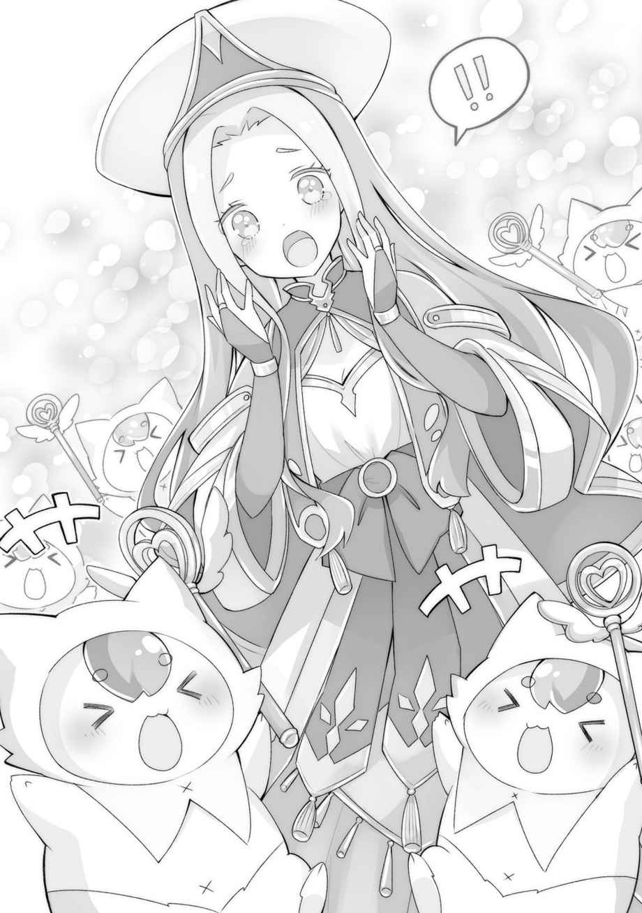

第一章
「──夢か」
目を覚ますと、そこは島の屋敷、通称『王城』の自室。
少し高い位置にある太陽が、すでに朝ではなく昼近い時刻であることを告げていた。
……しかし、妙に懐かしい夢を見た。あれは俺がこの世界に転生した時の記憶だ。
この世界での記憶が始まった時、俺と妹はすでに赤ん坊というより幼児、一歳か二歳くらいの大きさだったから、俺たちを捨てた人物は、そこまで育てておきながら、捨てたということになる。
だが、俺とルキアにはおそらく血の繋がりはない。なぜなら、捨てられていた状態があまりに違いすぎたからだ。
俺は、肌寒い日にも拘わらず薄い肌着だけの姿で地面にそのまま寝かされていたが、ルキアは上等な服を着せられ、籐のような植物で編まれたカゴに入れられていた。兄妹だったなら、そういう差別はしないだろう……たぶん。
外見上の違いもある。
まず髪の色。ルキアは鮮やかな金髪だが、俺は青みがかった黒髪。
もちろん、似てない兄妹という可能性もゼロではないのだろう。なにせＤＮＡ鑑定などの手段は存在しないのだ。あるいは、真実の神の能力者ならばそれも見抜けるのだろうか。
「それに……俺とルキアは顔が似ていないもんな……」
「……ルキアって、マスタの妹……？ だっけ？」
突然、隣から声がして驚き振り返ると、至近距離にアビスの端正な顔があった。いつのまにか横で寝ていたらしい。気配がないので、普通にビビるのだが。
「また忍び込んだのか……」
屋敷が完成してから、アビスにも個室が割り振られたのだが、どうも気に入らないようで、たびたび俺のベッドに忍び込んでくるのだ。それも俺が寝静まった頃に。
まったく気付かない俺も俺だが、どうも俺は眠りが深いタイプで、一度眠るとちょっとやそっとでは起きないのだ。小さい頃、ずっと妹と一緒に寝ていたから、耐性がついたのかもしれない。あいつはちょっと寝相が悪かったし。
「……だって、心配。夜中にマスタ、一人で急に死んじゃったりするかも」
「俺はどんだけ虚弱なんだ……」
本人はあくまで俺の身を案じて行動しているらしいので、あまり強くダメとも言いづらい。ユーリが用意した俺用のベッドは、なぜか二人くらい余裕で寝られるくらい大きいもので、アビスが入ってきたら狭くて落っこちてしまうというわけでもないし。
俺自身も、島に二人の頃は毎日いっしょに寝ていたってのもあり、アビスと寝ること自体には慣れているし、寒い夜なんかはポカポカしてありがたさすらある。
けど──
「邪魔するぜ。お、まだ寝てたのか大将。……って、嬢ちゃんもいっしょか。悪い、朝からお楽しみ中だったか？ 邪魔しちまったな」
これだ。
なかなか起きてこない俺を呼びにやってきたらしいファウゼルに、ベッドに二人でいるところをバッチリ見られてしまった。誤解なのだが、変に弁明するのも逆に恥ずかしいような気もする。「違うんだ、いっしょに寝てただけなんだ、なにもしていない！」なんて、言ってみたところで誰も信じないだろうし……。
それに、もうこれで三回目だ。
ファウゼルのやつもせっかちな性分で、ちょっと寝過ごすとすぐ呼びに来る。ひょっとすると決定的な瞬間を押さえてやろうと考えているのかもしれない。……いや、それはさすがに考えすぎというものだろうか。
しかも、アビスはなぜか寝るときにわざわざ大人モードに変身するから、誤解が加速する気がする。島ではあまり大人モードになることが少ないから余計に。
俺が島に来たばかりの頃ならば、まだ俺の見た目年齢が完全にお子様だったから問題なかったけれども、今はもうこの島に捨てられて三年近くも経つのだ。三年あれば成長だってする。
子ども姿のアビスと同程度だった身長は、今では大人姿のアビスと同じくらいにまで伸びた。前世の世界ならともかく、こちらの世界ではもう十分大人扱いされる年齢。
俺は十五歳になっていた。
◇◆◆◆◇
秋である。
無事にカエデの父親捜しを終え、島に戻った俺たちは、新しい仲間の為の住居作りに取り掛かっていた。
「おーい、カイ君。この石は何に使うんだい？」
「それは暖炉用です。先に中に入れておきましょうか」
「では、運んでおこう」
魔法のエキスパートであるエドワードは、肉体強化魔法が使えるので、肉体労働の適性も高い。暖炉用の石と簡単に言うが、直径50センチ程あるし、戦士君でも二人掛かりで運ぶ重さなのだから。
とはいえ、島での生活もおよそ三年。住居作りも慣れたものだ。
俺が開拓村から建材を出し、それをみんなで協力して組み立てていくのである。
最初は斧もノコギリもなかった。木材こそ潤沢にあったが、それを綺麗に成型することができなかったから、丸太小屋に植物の大きな葉っぱを屋根材にして暮らしていたものだ。
それが今では、そこそこ立派な家が建てられるようになった。
「こっちの……この皿みたいなものは何に使うんだい？」
「屋根瓦です」
「ヤネガワラ？」
エドワードが別に分けてあった瓦を手に取り、首をひねった。
帝国には屋根瓦の文化はないのだろうか？ いや、あったとしても魔法使いは貴族だ。屋根材のことなど知る必要がないのかもしれない。
「あっちの家でも使われてるように、屋根に葺くんですよ」
すでに立ち並んでいる住居を指さして説明する。島の住居の屋根はすべて瓦葺きだ。
「ふぅむ、なるほど。カイ君が考えたのかい？」
「まさか」
まあ、屋根瓦が一般的でない地域もあるだろう。俺の「てのひら開拓村」では特産品になるほど「陶器」が沢山作られているから、屋根瓦がいくらでも取り出せるだけだ。
今、建てているのは新しいエンフィールド家の為の屋敷である。
やっと娘であるカエデと再会できたのだ。家族水入らずで暮らせるように、少し大きめに作っている。完成したら、この島では二番目に大きい家になるだろう。
新しく島の住人となった仲間。今いっしょに作業しているカエデの家族であるエドワード・エンフィールドと、アイシャさん。それと大型犬のガンジー。
あと、なぜか島まで付いてきたファウゼル。ファウゼルの家も近くで建築中である。
「よーし、だいたい組み上がったな。土地はいくらでもあるから平屋でデカい家建てられるのがいいな」
俺の前世は日本人だ。
日本では、平屋の大きな家に住んでいるのはお金持ちと相場が決まっていたが、この世界……少なくともこの島では土地はダダ余りしている。なにより、島の所有者という概念自体がないに等しい。どこにどれだけの家を建てようがお構いなしだ。
もしかすると、この島にもどこかに正当な所有者がいるのかもしれないが、もう俺が占拠したようなもの。なにせ、この島に建国しようというのだから。
「どうですか、こんなもんで。中はこれからですけど」
作業が一段落し、俺はエドワードに訊ねた。
「ああ、こんな立派な家が、ここまでの短期間でできるとはさすがに驚いたよ」
正味三日で完成したのだから、確かに早いだろう。あっという間だ。
「戦士君たちの力ですけどね。カエデのゴーレムも手伝ってくれましたし」
「オサオサ！」「ヴィヴィヴィ！」
戦士君とゴーレムのゴレちゃんが両腕を上げてアピール。頭を撫でると、嬉しそうに手足をぴょこぴょこと動かして、とても可愛らしい。
「こっちの子は、カエデが命を与えて作り出してるんだよね……？ カエデがこんな能力を持つなんて」
エドワードがゴレちゃんの頭をおそるおそる撫でながら言う。カエデが作った巨大ゴーレムにぶん殴られた時の記憶が、うっすらとでも残っているのかもしれない。
カエデの能力は『仮初の命』という、物体に命を与えるというものだ。命にはタイムリミットがあるが、かなり大型の物体にも命を吹き込むことができ、力仕事で大活躍である。
「私も軍が長かったから祝福者については多少詳しいつもりだったが、こんな祝福があるなんて、全く聞いたことがない」
軍属だろうがなんだろうが、アラミラ神のことを知るものは本当に神殿内部の一握りだけだろう。祝福の儀式を執り行う高位神官ですら、アラミラの聖印を知らなかったくらいなのだから。
「僕とカエデのは特別みたいですからね。なにせ邪神呼ばわりされてますし」
「邪神か……。私は思うのだが……はたして神に聖も邪もあるのかな？」
エドワードは暖炉をせっせと組み始める戦士君たちを眺めながら、そんなことを言った。
「どういうことです？」
「彼ら……祝福者は戦争にも積極的に加担するし、神官たちに訊いてみても神に直接出会ったことがある人間がいるわけじゃあない。君だってそうだと思うが、『聖印が左胸に浮かび、能力が使えるようになる』。極端に言えば、それだけの話だろう？ 神とはいったいなんなのか。神官たちでさえ、曖昧な答えしか持っていなかったよ。それなのに聖と邪があるのは不思議だろう？」
なるほど、一理ある。
俺の場合は転生者だから、逆に「異世界だから神がいるんだな」と思考停止していたのかもしれない。前の世界でも「神」の実在が怪しかったように、この世界だって「神」の存在は怪しいというわけなのか。
「僕の場合は、能力が能力ですから、こんなものを与える存在は『神』としか表しようがないというのはわかるような気がします。神がいないのなら、つまり偶然ということですからね。遺伝ではないらしいですし」
「偶然……と言い切るには、あまりに強力な力すぎる……か」
「そうでなければ……また別の技術によるものなんでしょうか」
この世界にはもう一つ意味不明なものがある。魔法の元になるとされている力、魔力というやつだ。魔力を元に、炎や氷を生み出し、あまつさえ土や雷だって発生させる。
祝福ほどではないが、十分に意味不明な力だ。前世では存在しなかったものだから、そう思うだけなのかもしれないが……。
さらに言えば、アビスの存在も謎が多い。アビスは純粋な人間ではなく人造人間である。当然、前世ではアビスのような存在を作る技術は実現していなかった。考えられないほど高度な文明がかつて存在していたという、生きる証明である。
……というか、普通に「神の領域」というやつだ。
「それにしても、神の実在を疑う人がいるとは思わなかったから、ちょっと新鮮です」
この世界では、神はあって当然のものという認識だ。実際に神の使いが能力を発揮して、生活に溶け込んでいる世界なのだから。
「別に私とて神の存在を疑っているわけじゃあないさ。ただ、邪神というのは神殿の後付けなのではないかと思っただけでね。……なにより、うちの娘が授かった祝福が『邪悪な神』によるものであるはずがないだろう？」
「確かに」
結局親バカなだけなのかもしれないが、俺にとっても自分が授かった祝福を『邪悪なものではない』と言ってもらえるのは、正直嬉しい。
それに、こんなに愉快な能力を授けてくる存在が邪神なわけがないのだ。
「おいおいおい、話し込んでないでこっちも手伝ってくれよ！ 暖炉のレンガを積むのが意外と手間なんだよ」
少し離れた場所で自分用の家を建てていたファウゼルが呼びに来た。
どうやら、ファウゼルのところを手伝っている戦士君たちは、暖炉を積んでくれないらしい。というか、うちの島では石で暖炉を作るのでレンガでのやりかたがわからないのだろう。やったことないのだから。
ファウゼルは変わった男で、家を建てるのもできるだけ自分でやりたいと数体の戦士君たちの手伝いだけで、あとはすべて自分でやっている。彼は粗野そうな印象とは裏腹に、貴族の出だ。家を建てるなんて当然初めてのことだろう。
「ガキの頃、職人がレンガ積んでるのを見て憧れてなぁ。しかし、自分でやってみると意外と難しいもんだぜ」
あまり進んではいないようだが、楽し気な雰囲気は伝わってくる。
さすがに素人仕事（俺だってプロではないが）で倒壊してもらっても困るので、大事な部分は手伝ったりアドバイスしたりしてある。
男三人で並んでもくもくと暖炉のレンガを積んでいると、ファウゼルが思い出したかのように口を開いた。
「大将、これからどうするんだ？」
「めちゃくちゃ大雑把な質問だな」
「そりゃ、そうだぜ。これから始めるんだから、目標もなにもないだろ？」
俺たちの中では唯一ファウゼルだけが、逃れてきたわけでもなく、言うならば遊びでこの島に来た人間だ。他のみんなは単純にこの島で生きなければならない問題があるわけだが、ファウゼルの場合は別に他所でも生きていける。魔法使いは引く手数多で、生活に困るということもないだろう。
「っていうか、ファウゼルはなんで付いてきたんだ？」
ファウゼルは別に島に来るように誘ってはいない。傭兵として雇ってはいたが、さすがに島まで連れてくるつもりはなかったのだ。だが、なぜかここにいる。
「はぁ？ 今更それを訊くのかよ。俺を雇ったのはあんただろう？ それにこんな面白そうなのに首を突っ込まずにいられるかって」
「面白そうなのって……これでも、けっこう苦労してるんだぞ。最初なんて完全に死ぬか生きるかだったんだから」
「だが生き延びた。それで大将は神殿と戦うことにしたんだろう？ めちゃくちゃ面白れぇじゃねぇか！」
「別に戦いたいわけじゃないんだって！」
どうもファウゼルは誤解しているようだ。別に俺は神殿と表立って戦いたいわけじゃあない。ただ、神殿は俺たちアラミラの祝福者の存在を許さないだろうというだけで。
そして、強大な世界的組織であるファーレー教に対抗する為には、それなりの戦力が必要であるというだけで。
「まあ、ファウゼルが働いてくれるってんなら、やってもらいたいことはいくらでもあるよ。男で戦える人間がいるってのは心強いしな」
いくら強いといっても、アビスやサラや近衛隊員たち女性を治安が悪い場所に連れていくのはやはり躊躇するところがある。だが、男同士なら気にする必要がないから楽だ。
「まず頼みたいのは魔法だな。あの相手の魔法を無効化する技をアビスとサラに教えて欲しいんだよ。あれができるかどうかで魔法使い同士の戦闘が全然違うからな」
ファウゼルとエドワードは、謎の技術を持っている。
相手の攻撃魔法を、腕の一振りで霧散させる技だ。あの技は、魔法のエキスパートであるアビスですらできないらしく、もちろんサラも使えないのだという。
「なるほどな。覚えられるかどうかはやってみなきゃわからねぇが、いいぜ。あの獣人の魔法師には教えなくていいのか？」
「レンは教えても覚えられないだろうから、いいよ。あいつの使う魔法は、こっちの魔法とは違うやつだから」
「そうなのか？」
「俺もよくわからないが、そうらしい」
レンが使う魔法は、こっちの世界の「魔力」によるものではないらしい。じゃあ、代わりにどんなエネルギーを使っているのかといえば、わからんとしか言いようがない。俺の祝福の能力の延長線上のものなのだ。
「カイ君、僕はなにをしたらいいだろう」
黙って俺とファウゼルの話を聞いていたエドワードが口を開く。エドワードは、帝国で最強の魔法師として君臨していたらしい。レンを除けば単独では最強の存在だろう。
当然、いざとなったら戦力として期待したいところであるが、それよりもやってほしいことがある。
「エドワードさんには軍を指揮して兵士の訓練を施してほしいんです」
「軍を？」
「ええ、いちおう国を作っているわけですから、軍隊は必須なので。といっても、兵士のほとんどは戦士君なので、普通の軍隊とは違いますけどね」
なんといってもエドワードは元軍人で、地位も高く軍を指揮した経験も豊富だという。さらに、戦技教官をやっていた期間も長い。
「もちろん、それは構わないが……彼らとコミュニケーションを取れるか不安だな……」
オサオサとちょこまか働く戦士君たちを横目に、そんなことを言うエドワード。
まあ、実際には戦士君相手でも言葉の心配はほとんどないのだが、いちおう通訳でレンを付けるということで了承を取り付けた。
どの世界でも戦争には当然戦術が必要だ。ただ闇雲に戦えばいいというわけではない。単純な陣形一つだろうと、教育と訓練がなければ作ることはできないだろう。
こちらにいくらでも兵士がいて無限に戦えるなら別だが、現実として我々は小国も小国、世界で一番小さい国なのである。戦い方はどこより考えておかなければならない。
そういう点で、戦闘指揮経験がある人間がいるというのは心強い。
実際に戦いになったとしたら、魔法使いの多さでゴリ押しという手段に出ることも可能なのだろうが、いろいろな局面に対応できるように準備だけはしておきたい。
準備不足で全員殺されて滅亡。
そんなことになったら、俺は死んでも死にきれないだろう。
「……そういえば、エドワードさんは国を抜けちゃって大丈夫だったんですか？ 半ば、強引に引き抜いたような恰好でしたし、俺が言えた義理でもありませんけど」
俺がその質問をすると、エドワードは「ぺたぺたこん、ぺたぺたこん」とリズミカルにレンガを積んでいた手を止めて、ファウゼルのほうへ顔を向けた。
「ああ、問題ない。……ないのだが、実はファウゼルには泥を被らせてしまってな……」
「どういうことですか？」
ファウゼルがなにかしたということだろうか。
「あの戦いにファウゼルが参加していたのは、帝国でも知れ渡っているだろう。あいつは、そこを利用して、それとなく自分が私と妻を殺したという噂を流したんだよ。……おそらく国では、お尋ね者になっているだろう」
なるほど、文字通り泥を被ってくれたのか。
「ファウゼルに殺されたということなら、エドワードさんが消えても不思議ではありませんもんね……。しかし、それでは」
エドワードを正気に戻す為の戦いは、今思い出してもかなり大規模な戦いになってしまっていた。野次馬も多かったし、本来は慎重に行動しなければならないことを考えると、かなり軽率だった。あの時あの場所では、ああするしかなかったのだが。
……いや、もっと良い手はあったのかもしれない。
だが、今更それを言っても仕方がない。
「やめてくれよ。俺は最善の手段を取っただけだぜ。大将のほうに目が向くより、俺個人が追われるほうがずっとマシなんだからな。それに、そうすれば大将は俺を追い出せないだろう？」
そう言ってニヤリと笑うファウゼル。
確かに、俺たちのほうへ目が向かないように一芝居打ってくれた人間を追い出せるわけがない。
「ま、そうでなくても、私はそろそろ軍を抜けるつもりだったから、ある意味ちょうど良かったというのもある」
なんでもないことのように呟くエドワード。
「そうだったんですか？」
「ああ。あの国は、前の皇帝が崩御なさってから変わってしまったからね。私は、新しい皇帝とはどうも折り合いが悪かったというのもあるし。なにより、祝福者を使って自分を操っていた国に戻れるはずもないよ」
「それもそうですね……」
祝福者を使って操っていた首謀者が誰かはわからない。神殿がやったのかもしれないし、帝国の上層部も一枚かんでいた可能性もある。
まあ、いずれにせよ前の国に未練がないのなら、こっちとしては助かる。
「それに、仕事が忙しくてカエデとはあまり遊んでやれなかったからね。これからは、また一緒に過ごせると思うと年甲斐もなくウキウキしてくるよ」
レンガ積みを再開しながら、柔らかく微笑むエドワード。
「あー……それなんだが……。カエデちゃん、お前とは一緒に住まないって言ってたぞ」
「……え？」
エドワードの動きが止まる。
俺もカエデは家族水入らずで暮らすと思っていたが……？
「カエデの部屋だって作ったのに……？ なんで……？」
「なんでっても……、理由は本人に訊いてくれ」
「カイ君は知らないのか……？」
「いや、俺も家族で暮らすと思ってましたし……。訊いてくればいいじゃないですか」
カエデは今の時間は、近衛隊員さんたちとお風呂掃除をしているはずだ。
「……いや、それは……」
なぜか、訊きに行くのは嫌なのか怯んだ様子を見せる。
「そうだ！ カイ君、私の代わりに訊いてきてくれないか？」
「えっえええ、なんで」
「はっはは、最強無敵のエドワードさんも娘には強く出れないってことか」
「そういうわけではないんだが……。カエデは少し見ないうちに大人っぽくなってしまって……少し前までパパ、パパ、と後ろをくっ付いてきてくれてたのに……」
「親離れ……なんですかねぇ……。まあ、この島での生活はそれなりに過酷でしたし……」
カエデが島に捨てられて、半年近くは俺とレンとアビスとの四人暮らしだった。不安もあっただろうし、まだ家だって掘っ立て小屋で、帝国貴族の娘としての生活からの落差は凄まじいものだっただろう。家族との再会を諦めたことも一度や二度ではないはずだ。
そんな中で、カエデが精神的に強くなって親離れをした……。
そういう可能性もなくはないだろうが、家族との再会自体はものすごく喜んでいたし、いまいち釈然としない。
この問題は家族間で解決してもらったほうがいい……。
というか、首を突っ込むとヤブヘビになりそうな予感が……。
「頼んだよ、カイ君！」
しかし、頼まれてしまうと断ることもできない俺なのだった。
俺はレンガ積みから解放され、風呂掃除をしているカエデの下に向かった。
カエデは今は屋敷の一室を自室として使っているが、エンフィールド家の為に建てた一軒家で家族と暮らす……わけではないのだろうか。
一人暮らしでもするつもりなのかな。
「カエデいるかー？」
「あれー？ どうしたのお兄ちゃん。今日は向こうでパパとママの家を建ててくれてるんじゃなかった？」
パパとママの家ときた。
「家はほとんど完成したんだが、カエデはあの家に住まないって聞いたからさ。せっかく家族が揃ったんだし、カエデも両親といっしょの家に住むんだろ？」
「えっ？ 私は今まで通りお屋敷で暮らすよ？」
カエデは顔色も変えずにキョトンとした顔でそう言った。
ファウゼルの言う通り、いっしょに住むつもりはないらしい。
「せっかく家族が揃ったのだから、家族水入らずで暮らすべきなんじゃないか？」
なにかに遠慮しているのかもしれない。
例えば、この島に住むのはほとんど全員が訳アリで、特に元モンディアル公国の面々は、全員家族を殺されたか離れ離れになっているのだ。
自分だけが、家族と再会してのうのうと幸せに暮らすことを避けたとか……？
だが、彼女の答えは俺の想像とは違っていた。
「お兄ちゃん、私だって女なんだよ？ はいそうですかと、屋敷から出ていくわけないじゃない」
「カエデが……女……？」
いやまあ……そりゃ、カエデは俺の一つ下程度だし、非常に女性的であるユーリと比べたって別に年齢差なんかあってないようなもの。生物学的にも女には違いない。
しかし、なぜだか、カエデは子どもというイメージが強いんだよなぁ。まあ、いつもいっしょにいる二体の人形のせいだと思うけど。
「とにかく、私出ていかないからね。お兄ちゃん」
毅然と言い張るカエデ。意外とあの屋敷が気に入っていたのか。
「エドワードさんが泣くんじゃないか？ あの人、完全にいっしょに住めると思ってるみたいだったぞ」
「毎日顔合わせるんだし、問題ないない。もうパパとママといっしょに寝るお子様じゃないもんね」
えへんと胸をそらすカエデだったが、そういうところが逆にお子様である。
「レンとはいっしょに寝てるみたいなのに……」
「レンちゃんは別！」
ほぼ開き直りだが、まあ、確かにレンはしっぽがもふもふで気持ちがいいからな。
それにしても、カエデは明るくなったというか、逆に幼くなったように感じる。
エドワードにとっては、大人っぽくなってしまったと感じるのだろうが、そうではない。カエデは両親と再会するまで、早く大人になろうと、強くあろうとしている節があった。島に来た頃は毎日泣いていたのに、半年を過ぎた頃にはもう涙を見せることもなくなっていたくらいなのだ。
だが、両親と再会してから、そういう気を張った部分が薄れている。これは良い傾向だと言っていいだろう。
エドワードには、強がって親離れの真似事がしたいだけだと、そう伝えておこう。
◇◆◆◆◇
エドワード夫妻とファウゼルの家が完成し、本格的な冬備えの季節がまたやってきた。
初めてこの島で冬を越すのは、エドワード夫妻とファウゼルだけだし、荷物もある程度はエドワードの屋敷から運び出すことができた関係で、そこまでやることが多いわけではない。
ただ、夫妻は比較的温暖な地域に住んでいた関係で、冬用の衣類や寝具をほとんど持っていなかったので、それはこちらで用意しなければならないだろう。
「というわけで、また冬用のコートを頼む」
開拓村のエネルの屋敷の中。
俺は、お助けエルフの次女であるコロモに新しい仲間の為の服を発注していた。
エネルとコロモの姉妹が住む屋敷は、あまりにも頻繁に訪れる為、まるで実家のような感覚すらある。
「何着？ というか、サイズ測んなきゃだから連れてきて欲しいんですけど」
コロモが針仕事の手を動かしたまま答える。コロモの服はオーダーメイドだ。着用者のサイズを測りジャストのものを作ってくれるのだ。
「あとで連れてくるよ。どれくらいかかる？ 急いでるわけじゃないけど」
「三日でできるよ。コートだけなら軽いもんよ」
「助かる」
この島での冬越えには防寒性の高いコートが必需品だ。
そんな必需品でも、もし自分たちだけで作るとなったら、かなり苦労した挙句ボロボロの小汚いコートができるだけだろうが、コロモが作ってくれるおかげで、前世ならデパートで売っていたようなレベルの服を着ることができる。コロモ様々である。
「ふっふっふ、それについに村で綿花の栽培が始まりましたからね。麻で誤魔化してた部分も理想通りに仕上げることができますよ！ あとは、羽毛とか毛並みのいい動物の皮なんかが手に入ればいいんですが」
「そのあたりも、近いうちに手に入れたいな」
羽毛があれば、羽毛布団を作ることができるし、毛皮は襟巻にもなるし、毛布の材料にもできるだろう。冬の寒さが堪えるこの島ではマストアイテムといっていいかもしれない。
しかし、羽毛か……どうやって手に入れたものかな。この島にいた鳥型のモンスターを殺さずに家畜化しておけばよかったか。家畜化の方法はわからないけれど。
「あれっ、カイ。誰か来たよ？」
ミカンを食べながらボンヤリとテレビを眺めていたエネルが、俺の肩を叩く。
『テレビ』はてのひら開拓村のサブ能力の一つで、俺がこの村に移動した地点を三六〇度テレビで確認することができるというものだ。音声も拾える優れもので、リモコンで映す方向を変えることもできる。
てのひら開拓村はその能力の特性上、村から現実世界への移動時だけは第三者から見て「突然消えたり、突然出現したりする」わけで、できれば人に見られたくないのだが、テレビで戻る前に確認しておけば、それを防ぐことができる。
「おっ、なんか見慣れない組み合わせ」
テレビ画面に映っていたのは二人。ユーリとエドワードだった。
島で開拓村に移動するときには、特に場所を気にしたりはしない。思いついた時が移動時だ。そして、今日移動した場所は結界の大木の下の大岩のところ。
特に用がなければ、あまり人が来ることはない場所なのだが──
「もうこの辺りでいいだろう？」
エドワードがユーリのほうを振り返って言う。
「そうですね。この辺りなら誰も来ないでしょうし」
どうやらユーリがエドワードを連れてきたらしい。
「……君たちの事情はカイ君から聞いているよ。接触があるかもしれないということもね。そして、接触があるなら十中八九、君からだろうと。彼はそう言っていたよ」
エドワードとファウゼルには事前に話しておいてあった。
ユーリだけじゃなく、元モンディアルの人たちは帝国に対して禍根がある。
今、別の生活をしているからといって、その恨みがなくなったりはしないだろうから、元とはいえ帝国の高官だったエドワードをすぐには受け入れられないだろうということを。
ユーリには復讐など考えるなと言ってはあるが、はいそうですかと割り切れるようなものではないだろう。帝国に肉親を殺されているのだから。
「えっ……？ カイ様が、どうして……」
ユーリが意表を突かれたような顔をするが、俺としてはユーリが驚くことのほうが心外だ。新しい人間が入ってきたら、先住民との軋轢を避けるように努めるのは当然だろう。まして、今回のケースはかなりデリケートだ。
エドワードだけでなく、ファウゼルにもある程度は言い含めてあるが、「雇われて仕事しただけの傭兵」と「命令した側かもしれない将軍」とでは、エドワードのほうが矛先を向けられる可能性は高いだろうと俺は踏んでいたのだ。
それでも、カエデの父親であるエドワードに直接憎悪を向ける人間はいないのではないかと思っていたのだが……ユーリがエドワードを呼び出したとなると──
「カイ君が気にしたのは、私たちの関係性。君と私が『滅ぼされた国の姫君』と『滅ぼした国の将軍』だからだろうね。元……ではあるが、禍根を残している可能性を危惧したのだろう」
「カイ様……そんなことまで気になさってたんですね。普段、私たちの過去などあまり考えてなさそうな顔をしているから、少し……意外です」
「そうなのかい？ 彼は年齢からは考えられないほど頭が回る男だよ。うちの娘と一つしか変わらないとはとても信じられないほどにね」
「それは私も同意見ですわ。あの祝福の能力などより、彼自身が一番の異常ですから」
異常ってヒドいな。……いやまあ、異常なんだろうけど。普通に。転生者だし。
「っていうか、このまま聞いてしまっていいのか？ これ」
完全な盗み聞きなんだけど……。
リモコンを手にテレビの電源を落とそうか悩んでいると、コロモがリモコンを持つ俺の手の上に、自らの手を重ねた。
「カイさん鈍感だし、聞いといたほうがいいと思いますよ？」
「コロモ……そうなのか？」
「カイさんって、島の人たちの衣食住とか安全には敏感だけど、他のことはあんまり気にしてないんじゃないですか？ だからこそ、衣食住を司る私たちがいるんだとは思いますけど……たぶん、ユーリさんがいろいろフォローしてくれてたんですよ、これ」
確かに……そうかもしれない。
ユーリは元々近衛隊に対して立場が強いし、なんとなくこの島のナンバー２みたいな立ち位置になっていた。俺もそのことが悪いとも思っていなかったけど、見えない所でいろいろ働いてくれていたのかもしれない。
俺が近衛隊員さんたちの愚痴をほとんど聞いたことがない背景に、ユーリやサラの尽力があったとしても不思議ではない。
翼人たちがやってきてから、先住民とのコミュニケーションにも俺は自分の仕事に忙しく、ほとんど参加できていなかったが、彼らとだって何もなかったはずはない。
文化の違いも生態の違いもある。多少の軋轢は必ず生じるもので、そういった諸々の折衝をユーリがやってくれていたのだろうか？
俺はリモコンをテーブルの上に戻し、テレビの画面にもう一度目を移した。
「……ただ、彼──カイ様は優秀である反面、考えられないほど甘いところがあります」
「そうかもしれないな。あの戦いで、あれほどの戦力を持ちながら彼は結局誰も殺さなかった。神官でさえもね。彼の境遇を考えれば、殺してしまっても不思議ではないのだが」
「むしろ、誰も殺さずに済ませたこと自体は誇るべきなのかもしれません。ですが……そうですね。正直にいって私も、さすがにあの場合は神官を殺すのかと思っておりました」
やはりこっちの人間からすると、誰も殺さなかったのは判断として甘かったのか。
いやまあ、俺だって死人に口なしというし、目撃者は全員殺すくらい過激なほうが後々のことを考えればよいのかもしれないくらい、考えはした。
でも、殺せないだろう。まして、命令でやってただけの神官たちを。
「だが、別にそんな彼を教育してほしいと頼むために、私を呼んだわけでもないのだろう？ それとも……モンディアル攻めのことを謝罪してほしかったのかい？」
「ふふ……まさか。あなたに謝罪されても嬉しくありませんし、あの戦闘に参加すらされていなかったのでしょう？ まあ、それでも恨み言の一つも言えば、少しは気が晴れるのかもしれませんが……そんなことで、この気持ちを希釈したくありません」
ユーリははっきりと「この気持ち」と口に出した。つまり、未だ彼女の中では帝国に対する恨みが燻り続けているということだ。
わかってはいたつもりだったが、実際に聞くとけっこう威力があるな。普段は「もう忘れましたよ～」なんて顔してるだけに。
「ふむ……。君は、カイ君を使って帝国に復讐しようと考えているのか？」
エドワードが少しだけ剣呑な雰囲気を漂わせ、その言葉を口にした。
彼女が帝国への復讐心を忘れていないのならば、その方法は俺……いや、この国を動かすのが一番可能性が高い方法である。
だが、ユーリは眉一つ動かさず、こう答えた。
「いいえ。私が彼に望むことは一つだけ。『忘れさせてほしい』だけですわ」
「どういうことだ？」
「……私だって、帝国に復讐なんてできるわけがないってわかっているんです。でも、仕方ないじゃありませんか。国を滅ぼされて……落ち延びて、ただ生きていて……忘れられるはずがないじゃないですか。なにか、別のものでこの心の穴を埋めてもらわないと」
一体、なにを言い出したんだユーリは。
「それなのに、私の気持ちを知ってか知らでかのらりくらりと躱してくれちゃって……」
「なるほどね」
「……コホン、まあ、彼が朴念仁なのはこの際良いとしましょう。私があなたを呼んだのは、こんな話をする為ではありません」
やっと本題に入るらしい。まあ（盗み聞きとはいえ）、ユーリの心情を知ることができたのはよかったのか、そうでもないのか。
「まず誤解のないように言っておきますが、私はあなたのことは基本的に信用しています。なんといってもカエデちゃんのお父上ですし」
信用してるのか。ちょっと意外だな。
「ふぅん？ そんな簡単に信用していいのかい？」
エドワードも同じ感想を持ったようだ。
そりゃ、今までの話の流れじゃあ、そう思うのも無理はない。
「家族揃って島まで来たような人間を疑っても仕方がないというのもあります。もし裏があるなら、家族は連れてこないでしょうし。それに、なんの野心もなく暮らしている我々を害そうと考えるタイプではない……。そう感じました」
「そう感じてもらえたなら嬉しいな。私にとってもこの国は娘が安心して暮らせる唯一の場所なのだからね。娘の命の恩人でもあるカイ君に不利益なことを、私がするはずがない。神に誓ってね」
「神は我々の敵ではなくて？」
ユーリが皮肉げに笑う。我々の目下の仮想敵はアラミラの祝福者を捨てる神殿だからだ。
「神殿と神とは分けて考えるさ。少なくともカエデやカイ君に力を与えている神は、我々の味方だろう」
「それもそうですわね」
まあ、俺も神殿は敵だと思っているが、神や祝福者は別に敵とは思っていない。
父親も妹も祝福者なのだし、神殿で売っている祝福者製の薬の世話にだってなっている。悪いのは神殿の一部、おそらくは上層部だけなのだ。
「それで信用している私に、話したいこととは？」
「あの傭兵のことです。カイ様はすっかり信用しているようですが……」
「なるほど、ファウゼルのことか。確かに最近はすっかり仲良しだものな、あの二人。かなり年齢差もあるはずなのに、妙に馬が合うようだ」
「そうなのです。私と話すときは少し壁がある感じなのに……」
えっと、そりゃあ男のほうが話すの気楽だし、ファウゼルはああいう奴だから……。
「ふむ。まず、ファウゼルが間者である可能性は限りなく低いだろう。あいつは嘘が下手だし、そもそもそんなことをしても得がない。ファウゼルほどの魔法師なら、どんな生き方だってできるはずなのだからね。間違いなく、ただ好きでこの島に来ただけのはずだよ」
「なるほど……。確かに、怪しいところは私が見る範囲でもありませんでしたが……」
ユーリが心配になるのも無理はない。ファウゼルは傭兵をやっていたし、もっと良い条件を与えられれば、そっちにつく可能性だってある……ということ。
面白いから来たという奴の言い分を信じていいのか、と考えるのは自然なことだと思う。
だが、俺としてはもうファウゼルは信じることに決めている。それが、ユーリのいう「甘いところ」なのだろうけれど、人を信じることは必要なことだ。
「一先ずは、私だけでも注意しておくしかないでしょうか。どちらにせよ、この島から外へ連絡を取ることはできませんし……」
「ああ、ファウゼルは私の弟のようなもの。私のほうも気を付けて見ておくことにする。しかし、君がファウゼルを敵視するのは、ただの嫉妬なのではないか？」
「えっ？」
俺も想定していなかった言葉で、ユーリの表情が固まる。
「カイ君を取られたのが面白くない……、そう言っているように聞こえたが。気のせいならすまない」
「嫉妬……なるほど、この感情が……。確かにそうかもしれません。あの男が信用できないというより、カイ様があの男に見せる笑顔が悔しくて……って、私はなにを言ってるんでしょうか……」
ホントだよ。なんの話だ。
「まあ、ファウゼルのことは私もよく見ておくことにするよ」
「よろしくお願いしますわ」
ユーリがファウゼルのことを気にするのは当然といえば当然だ。
俺たちの生活は、あくまで『この島には誰も住んでいない』という前提の下に成り立っている。なぜこの島に固執するかといえば、ただ一つ『神殿がこの島に子どもを捨てる』からだ。それを保護し、安全な生活の場を提供する為にこの島で暮らしている。
もし、神殿に島で暮らす俺たちの存在が知られてしまったら？
そうなったら戦争だ。彼らはアラミラの祝福者の生き残りを許さないだろうし、事情を知っているであろう住民たちだって、どんな目に遭うかわからない。
だから、絶対に知られてはならない。
まあ、知られたらみんなで他所の土地に逃げればいいのだが、そうなったらもう新しいアラミラの祝福者を救う手立てはなくなるだろう。神殿だって、捨てる場所を変えるだろうし、もっと惨いことをする可能性だってないわけではないのだ。
「では、せっかくですからもう一つだけ訊いておいてもよろしいですか？ あなたはライムリーグ帝国でもかなりの上の人物だったはずです。どうして、こんなにあっさりと国を捨てることができたのです？ カエデちゃんの為とはいえ……そんな簡単に決められることではないでしょう？」
やはりそこはユーリも気に掛かったらしい。
「ああ、それはね。実は、元々現在の皇帝とは折り合いが悪くてね。私はいわゆる先帝派というやつだから。国抜けに特に思うところはなかったよ」
「なるほど……それならば理解できますね。現皇帝……皇太子殿下はいけ好かない男ですものね」
「彼を知っているのかい？」
「ええ。プロポーズされました。もう何年も前のことですけれど」
おおっと、ユーリにそんな過去が。
って、まあ当たり前か。ユーリは美人だし、一国の姫ともなれば、結婚も早いだろう。むしろ、帝国とモンディアルに国交があったらしいことが驚きである。
「ああ、そういえばそんな話、私も聞いたことがあるよ。殿下がモンディアルの宝石に告白して見事撃沈。大層お怒りだってね。当時は笑い話として聞いたものだが……ひょっとして？」
「ええ、あの戦の目的は私だったのだと思います」
ん？ え？
「なるほど……殿下ならやりかねない……か。なぜ長年の友好国であるモンディアルに突然攻め込むことになったのか……理解できたよ。むしろ、よく逃げおおせたね」
「ええ、捕まった相手が奴隷商だったので。もしかすると目的が『私』だとは、末端の兵にまでは知らされていなかったのかもしれません」
「殿下はプライドがお高い方だからな。一人の女性が戦の目的だとは、なかなか言えないだろう。だが、王族を捕虜にするように程度の指示は出ていたはずだが」
「ええ、だからこそ逃げられました。もし命令が殲滅だったならば途中まで落ち延びることも不可能だったでしょう」
確か、帝国が田舎国であるモンディアルをわざわざ攻める必要性がわからない……そういう話だけは聞いていた。まさか、ユーリ目当てだったとは……。
「ふぅ……しかし、その感じでは、モンディアル攻めの首謀者を知っているわけではないようですね」
「首謀者？ 君の話では殿下が怪しいという話だったが」
「それはあくまで憶測ですわ。本当のところはわかりません。もちろんトップが最後の決断を下したのは間違いないでしょうけれど」
「知って……どうする？」
「カイ様には、復讐だけは考えるなと言われておりますし、私もそのように振る舞っております。……しかし、私の中にいる悪魔が囁くのですわ。決して許すなと。必ず、命令した人間に責任を取らせろと」
ユーリは国の生き残りでは最もトップに近い位置にいた人間だと言えるだろう。だからこそ、国への想いは一番強いに違いない。
彼女が、帝国を許したわけではないことはわかっていた。
だが、そこまで強い気持ちを持ち続けていたとは、少し想定外である。
「気持ちはわかるが茨の道だな」
「承知しておりますわ。くれぐれもこのことはご内密に」
盗み聞きしていて良かったというべきか、余計なことを聞いてしまったというべきか……。ユーリは、腹に一物抱えてるタイプだとは思っていたけれど、ぜんぜん復讐を諦められてはいなかったんだな。
ただ、まあ俺だって彼女の気持ちが全くわからないわけではない。
自分の国を滅ぼされたのに、俺が忘れろと言ったからといって「はい、わかりました」と忘れられるなんて、そんなわけないのだ。
ただ、それに対して俺がどうするべきかは、わからない。
「……一度、ちゃんと話し合っておいたほうがいいんだろうな」
島の防衛機能が一段落したら、ユーリだけじゃなく元モンディアルの人たち全員としっかり話しておこう。
◇◆◆◆◇
「カイー！ こないだのブドウ、無事に村に根付いたよ！」
「じゃあ、もう収穫できるのか？」
「できるできる。持ってこようか？ けっこー美味しいよ、モグモグ」
「すでに食べてる！」
秋が深まってきたある日。
エネルがどこからともなく紫色に熟したブドウを取り出して食べ始めた。
俺も貰って食べてみたが、果肉部分は少なめだし種は多いし皮は厚いしで、前世に食べていたものと比べると、かなり食べにくい代物。ただ、味は甘酸っぱく濃厚で、なかなかに美味しいと言えた。俺は酒を造るためにブドウをこの村に入れたのだが──
「あんまり知識ないんだが、このブドウで造れるのかな。ワイン。ほら、種類とか」
「ワインって相当古くからあるらしいからねぇ。造れるんじゃない？ 要は潰して発酵させるだけでしょ？ 樽も用意があるし。どうする？ とりあえずブドウ用意しようか？」
ワインといえば、桶いっぱいのブドウを足で踏み潰して造るという印象が強い。実際それでいいんだろうが、なんというか元日本人の感覚からすると不衛生な印象がある。そんな話をエネルにすると、それなら自分たちならば無菌だしちょうどいいなどと言い出した。
確かに、エネルたちならば細菌的なものの数は少なそうだ。
「じゃあ、さっそくやってみよー！」
思い立ったら即行動を旨とするエネルが、どこからか大きめの桶を用意して、そこに大量のブドウをぶちまけた。妹のコロモも呼び出し、姉妹でスカートのすそをたくし上げ、躊躇なく飛び込みブドウをぐっちゃぐっちゃと踏みつける。
「ひゃっ？ 思ってたより足くすぐったい！ どひゃー！」
事前に足を洗ったりしない勢いの良さには度肝を抜かれたが、まあエルフ姉妹が踏んで造ったワインとか、前世だったら好事家が何百万円でも出しそうな気もする。
「楽しいね。美味しい美味しい」
絶え間なくつまみ食いしながら、ブドウを踏みつけるエネル。
「ちょっとカイさん、これ本当に必要な作業なんですか？ めちゃくちゃ汁が飛ぶんですけどっ！ ちょっとお姉ちゃん、もっとソッとやってよ！ ああ……服がシミになっちゃうじゃない……もう」
嫌そうな口調のわりに、積極的に作業を続けるコロモ。
「えっせっせ！ ほっせっせ！ ほーれ、ブドウを追加じゃい！」
エネルがどこからともなくブドウを取り出して、桶の中に放り込む。エネルとコロモが踏みつけて潰したブドウの汁が、大きな樽の中に満たされていく。
「そろそろ、どんなもんだか味見してみてよ、カイ」
俺は促されるまま、躊躇なくブドウの汁を一杯すくって飲み干した。なんとなく勇気がいるが、こういうのは勢いが大事だ。
「ど……どう？」
「うーん、ぬるい！」
味も前世で飲んだようなブドウジュースとはまるで違って、なんというか……薄い。
「どれどれ……。うーん、確かにジュースとして飲むには、なんというか味も甘みも薄いね。砂糖でも追加すればいいのかな。難しいもんだ」
「まあ、ワインにするんだから問題ないでしょ。それでどうするんだっけ？」
「樽に入れるんじゃない？ いや、なにか大事なことを忘れているような……？」
よくわからないが樽に入れる工程があるのは間違いない。
「とりあえず入れて様子を見よう。なんたって試作なんだから、失敗は成功の母だよ」
ということで、ブドウの汁を樽に詰めて置いておくことにした。確か、どれくらいか寝かせることでワインになったような、エネルが言うようになにか忘れているような……。
数日後。時間の流れが違う開拓村では数週間が経過した頃、俺はエネルとコロモとでワインになっているかどうか、樽を開けて飲んでみることにした。
「単純に腐って飲めなくなってる可能性もありそう……」
「そのときはそのときだね！」
「ま、とにかく開けてみよう。この栓を抜いて──」
樽の横に付いた栓に、俺がちょっと力を入れた瞬間だった。
パァン！ と爆発するような音がして、驚いた俺が樽から身体を離すのと、栓が弾丸のように飛び出すのはほぼ同時のことだった。
飛び出した栓は一直線に進み、少し離れたところで面倒くさそうに見ていたコロモに直撃した。
「痛いッ！ なっ、なんなの──」
コロモが何が起きたかを理解するよりも早く、樽からブドウ汁の成れの果てが凄まじい勢いでブシャーと飛び出した。それがまた狙いすましたかのようにコロモに襲い掛かる。
「キャッ！ ちょっ！ やだ、なにこれ、汚れる！ シミになる！ 私のお気に入りがぁああああああ！」
あっという間の出来事だった。
勢いよく飛び出した樽の中身は、またたく間に空になってしまった。
後には紫色の汁でビショビショになったコロモだけが残された。
「あー！ なるほどなるほど！ 思い出したよ！ 発酵させてから樽に詰めるんだっ！」
エネルがコロモの惨状はまるで気にせず、ポンと手を叩く。
「ああ、俺もちょうど思い出したわ……。コロモには悪いことしたな……」
ワインは発酵させてアルコールを発生させてから樽に詰めるんだった。
いきなり樽に詰めると、樽の中で発酵したガスが圧縮されて、こういうことになるのだ。とても勉強になった……。
「ちょっと……私は勉強になったどころじゃないんですけど……。臭いし……どうして私ばっかりこんな役目なの……」
全身、紫色に汚れたコロモが肩を落とす。
せめて、美味しいワインが出来たら、コロモに最初に飲ませてやろう。
その後、ダメになっていた樽の中身は廃棄し、新しいワインを仕込んだ。
今度はしっかり発酵させてから、樽に詰めて熟成させるつもりだ。
それが終わった後、俺はエネルと二人でお茶をした。
「そういえば、カイ。『外遊』で外に出してた子、帰ってきてるよ」
「マジか。スコルパの街に置いてきた青年だろ？ ホントに勝手に帰ってくるんだな……」
開拓村の能力である「外遊」は、開拓村に住んでいる人間を勉強の為に外──つまり現実世界に出して、勉強させ開拓村に知識を還元するという画期的能力だ。
俺だけでは、開拓村に伝えられる事柄に限度があるし、それだけでは村の文明の進歩はゆっくりすぎる。
人間が外に出て自分で勉強してきてくれるなら、それに越したことはないのだ。
「それで……なにを学んできたって？」
「やっぱり鍛冶に関することがメインみたいだね。あと、経済……貨幣経済についてかな」
「経済か。技術でない方向のもあるのか」
開拓村では、自然発生した原始的貨幣制度がすでに始まっている。
というより、俺が持ち込んだ現実世界のお金、すなわち金貨や銀貨なんかをそのまま強引に貨幣として扱っている感じである。そのくせ、半分くらいは物々交換も生き残っており、貨幣経済が本格的に始まる前の過渡期であるといえた。
外遊に出た青年が正しい貨幣経済を村に持ち込んだならば、物々交換は徐々に減ってゆき、もしかしたら、お金も自分たちで鋳造するようになったりするのかもしれない。
まあ、開拓村は文字通り「村」だから、もしかするとどこかの国に属していて、その国の政府が発行した貨幣を用いるような形になるのかもしれないが、それはこれからのことだからわからない。できれば村が国家にまで育つところを見てみたいものだ。
「鍛冶のほうはどんな？」
「うん、なんだかんだ今まで試行錯誤して遠回りしてた部分を、かなり効率化できるようになったみたいだよ。生産性の向上というやつだね。あと、やっぱり刃物作りに特化してきたみたいだ」
「魔法の火力で鍛冶をやるなんて現実世界にもノウハウないだろうに、うまいこと技術を落とし込めたんだな……。というか、刃物に特化って、やっぱり俺がナイフ持ち帰ったところから？」
ずいぶん前、鉄製品の製造が始まった頃、村の中心にある「カイ像」に供えられていたナイフを持ち帰ったことがあったのだ。どうも、それからというものの、定期的に刃物が供えられていて、村も刃物作りに妙に熱心なのである。
「カイのこともあっただろうけど、単純に鉄で作れる物の中で刃物の需要が高いからじゃないかな。どの家庭でも包丁くらいあるし、外で活動するのにもナイフあると便利だから」
「それは俺も今の生活で実感しているところ」
やはり鉄というのは硬くて丈夫でいい。
ちょっとした工作をするにも、ナイフは必需品だし。
「あっ、それと村のレベルが上がったんだよ！ さて、いくつでしょー？」
「いきなりクイズ形式！」
どうやら外遊に出ていた村人が帰ってきたのが理由らしいが、最近かなりレベルの上がり方が遅くなっていたから、さすがの俺でもわかる。
最後に見たときが三十三だったはず。ならば答えは一つ！
「34だ！」
「ブッブー！ 35でしたー！」
「一気に２も上がったの？」
「新しい特産品も増えたからね。人口もだいぶ増えていたし」
エネルが言うには、レベル35に上がる条件は『新しく特産品を増やそう』だったらしい。ということは、俺の知らない特産品が生まれたということか。
しかし、35ということは、新しい能力とか特典があるはずだ。
「それについては、実際にボードを見に行こう」
エネルに促されて、村の入り口にあるボードを確認しに行く。
──────────────────────
☆☆☆ てのひら開拓村 ☆☆☆
おめでとうございます！
開拓村が『街道沿いの交易村』になりました！
新しい特産品として『刀剣』が追加されました！
新しいアドバイザーエルフが追加されます！
現在のレベルは 35 です。
村の名前は『ハスクバーナ村』です。
開拓度は『街道沿いの交易村』です。
ＮＥＸＴ ＬＥＶＥＬ ： 学校の創設
──────────────────────
「おお！」
なんかすごく育った感じがする！ まさか特産品が『刀剣』になるとは。
鉄そのものは『天降鉄』という名前で特産品化していたが、鉄製品はまだだったのだ。
刀剣が特産なんて、関とかゾーリンゲンみたいだ。
それに、さらに気になる一文が──
「ねえ、エネル。新しいエルフが追加されるってあるけど……」
「……うん。来てしまったようだね、この時が」
「な、なにその意味深なセリフ……」
「私たちは三姉妹なんだよ……。長女である私、次女のコロモ、そして──」
やたらと勿体ぶるエネルだが、エネルたちが三姉妹なのは、わりと最初から気付いていた。だって、自分たちで「衣食住」を司るって言ってたし。
「三女のシエル！ 住を司る、アドバイザーエルフ！ ちょっと背の高い末っ子！」
エネル、コロモと来て三女はシエルか。住を司るというくらいだし、英語のシェルから来た名前っぽいな。そうなると、食を司るエネルはどこから来た名前なのか、よくわからないけど。
「で、その娘はもう来てるの？」
「どうかな……家にいなければまだ来てないんじゃないの」
うん？ どういうことだ？
「……その、シエルはいわゆる引き籠りってやつだから、外にはあんまり出てこないので」
「そうなんだ……。能力はどういうのがあるんだ？」
大事なのは本人の人格なんかより能力のほうだ。コロモはかなりの能力を持っていたから、シエルにも期待ができそう。住を司るというくらいだから、家を建てるのが上手いのか……いや、引き籠りなのに大工仕事が得意というのは想像しにくいか……？
「能力のことは私もよく知らないんだ。本人が来たら聞いてあげて」
「ん、まあそうする」
その後、エネルの家も確認してみたが、コロモがキレながら服を洗濯していたくらいで、誰も新しい娘は来ていなかった。
次の日。
そろそろ新しいエルフであるシエルが来ているかと、さっそく開拓村を訪れた。
一言挨拶したいというので、ユーリも連れてきている。
「……って、マジかよ」
「エネルさんのお屋敷ですよね？ 前に来た時はこんなに立派ではなかったような？」
ユーリが驚くのも無理はない。
訪れてすぐにわかった。住を司る三番目のエルフ「シエル」はすでに来ている。
なぜなら、エネルの屋敷が一晩で三倍ほどのサイズに膨れ上がっていたからだ。
簡素な作りだった壁や屋根や窓枠なども少し凝ったデザインに変更されている。手仕事でこれをやったなら大したものだが、おそらくなんらかの能力なのだろう。
やはり「住」に関する能力を持つのは間違いないようだ。
「おーい、いるかー？」
一声掛けながら玄関扉を開くと、チャララララダララ～と、なんだかものすごく懐かしい電子音楽が聞こえてきた。前世で毎日のように聞いていた独特のＢＧＭ。
「おっ、おいおいおい！ マジで？」
音の発生源、テレビに映るその映像を見て、つい興奮してしまった。
いや、これが興奮せずにいられるだろうか。
ゲームである。テレビにテレビゲームが映っている。
テレビの前に置かれたテーブルにゲーム機があり、そこからコードが伸びて、エネルたちの手にはコントローラーが握られている。
「やあ、カイ。出迎えず悪かったね。つい盛り上がってしまって」
「それはいいけど、なんでゲームあんの？ しかもちょい古いやつじゃないこれ」
「シエルが持ってきたんだよ。ほら、シエル自己紹介して」
そう言って、エネルが隣に座る長い金髪の少女の肩を叩いた。
少女が振り返る。ヘナっとした長い耳、眠そうな目をしたエルフの少女。
活発的なタイプであるエネルやコロモとは対照的に、ものすごくダルそう……というか、気怠い雰囲気を醸し出している。
そういえば、こないだ「シエルは引き籠り」だとエネルが言っていたっけ……。
「はじめまして、カイ。ボクは、『住』を司るアドバイザーエルフのシエルです……。お姉ちゃんたちがお世話になってます……。こんごともよろしく……」
ペコリと頭を下げるシエル。俺とユーリも、つられて頭を下げた。
この辺りの挨拶の様式は、日本準拠である。
「俺はカイ・ハスクバーナ。こっちはユーリ。よろしくな。……それで、シエルはなにができるんだ？ っていうか、家がデカくなってるのはシエルがやったんだろ？」
「うん。正確にはボクがファンネルを飛ばして……ね」
「ファンネル」
ファンネルってあのファンネル？ 前世のロボットアニメで見たあの。
「これ」
シエルが、手のひらから半透明の人形を何体も出現させる。人形は、行儀よく整列するとシエルの指示を待つかのようにジッと動かずにいる。
赤い頭巾をかぶったコビトで、戦士君と似たようなシルエットだ。
「……これがファンネル？」
「うん。指示を出して作業をさせる。精霊術」
「もうシエルったら、そんなんじゃカイだってわかんないでしょ！」
あまりにざっくばらんな説明をするシエルから、引き継いだエネルによると、あの人形みたいなものは、土の精霊術で「ノーム」という精霊なのだそうだ。
シエルは四大精霊を使役し、住環境を整える……そういう役割とのこと。
「でも、結局この屋敷を増改築するだけ。村には手出しできないから……」
自嘲的に言うシエルだが、暇な時はエネルの家でゆっくりすることも多い俺としては、けっこう助かる。
そうでなくても、元々開拓村の中は現実世界よりも文明度が微妙に高いし、エネルの屋敷は特にその色が濃い。なんといっても、ゲーム機が登場したくらいだし──
「そういえば、このゲーム機はどこから出てきたんだ？」
「これはボクの私物。カイの記憶やらなんやらから再構築して作り出された一点ものだよ。少し……やってみる？」
「おっ、やるやる」
シエルからコントローラーを受け取る。
ゲームソフトは円盤型で、すでに本体の中に入っているようだ。
「お連れ様もどうですか？ 同時プレイできますけど」
シエルが、状況が理解できていないのかボンヤリと立ち尽くしていたユーリにコントローラーを勧める。
ユーリは促されるままにコントローラーを手に取ったが、全く理解できないという表情。少し半笑いの困り顔で、ちらちらと俺に助けを求めているほどだ。
「まあ、とりあえず俺一人でやってみるから、ユーリは見てて。たぶん、人生初のコンピュータゲームはゲームになんないと思うし」
俺が初めてゲームをやったのはいつのことだったか。たぶん、幼稚園か小学校低学年か。文字を読むのもおぼつかない中でプレイしていたから、ゲームの目的すらちんぷんかんぷんだったな。ユーリもきっとそうだろう。
スタートボタンを押して、ゲームを始める。
チャラララ～と軽快な電子音が流れ、なんともいえない郷愁を感じてしまう。
ゲームはいわゆる２Ｄスクロールアクションで、武器を振り回して敵を倒しアイテムをゲットし、強くなりながら先へ先へと進むスタイルのもの。
死ぬ間際はシミュレーションゲーム専門だったが、小学生の頃はこの手のゲームもよくやった。なつかしいな。
ゲームの難易度もそれほど高くなく、基本的にボタンを連打していればなんとかなるので、初めてやるであろうユーリでも大丈夫だろう。
久々だし、この肉体では初プレイなのだが、意外なほど違和感なくできた。
俺はステージ２をクリアしたあたりで、ユーリに声を掛けた。
「やってみる？ けっこう面白いよ」
「あの……カイ様は、この……ゲーム？ というのをやったことがおありだったんですか？ 私は見たことも聞いたこともなくて……」
ユーリが恐る恐るコントローラーを受け取りながら訊いてくる。
なるほど、つい熱中してしまったけれど俺のゲームに対する態度はどう見たって初見の人間のものではなかっただろう。
だからといって、正直に「前世の記憶があって、そこで触ったことあるから云々～」なんて話をしだすのも、なにか変だ。変人だ。
「ん？ いやわかるだろ？ 別に難しくないでしょ、こんなの」
「えええ、そうなのですか？ やってみれば簡単なのでしょうか……」
「簡単簡単！」
初見でも余裕でできちゃう天才ムーブで誤魔化すことにした。世の中には、そういういきなりできちゃう人というのが一定数いるものだ。問題ない。
釈然としない表情のまま、ユーリがコントローラーを受け取る。
俺ももう一つのコントローラーを手に取り、二人プレイでスタート。軽快な音楽と共に、ゲームが始まる。このゲームは２Ｄスクロールアクションものだが、ストーリー仕立てになっており、キャラクターも五人から選べる。
「初心者なら関羽がいいかな」
「カンヌ……」
キャラクター選択で止まってしまったユーリにシエルがアドバイスを送る。ちょっと発音が変だが、素直に関羽を選択。なら俺は張飛にしてみるか。
「こっこっこっこれどうすればいいんですか！ えっ、これ？ こっちが私？」
「そうそう、このキャラを動かして、このボタンで攻撃できるから。こっちはジャンプ。十字キーで操作して」
「あっ！ なるほど、なんとなくわかります！ 行けー！ カンヌ！」
「関羽ね」
その後も、普段の清楚なイメージからは想像できないほどギャーギャーと大騒ぎしながら、意外とすぐにユーリはゲームに順応した。
「やったぁ！ 敵将打ちとったりぃ！」
ステージ１をクリアして歓声を挙げるユーリだが、すぐにステージ２が始まり、今度は「馬がいなくなった！」とか「魔法は使えないの」とか、ちょっとゲーム慣れした人みたいな発言まで飛び出した。予想を遥かに超える順応性の高さだ。
俺はプレイをコロモと交代して少し休憩することにした。
久々にゲームをやると意外と疲れる。
「案外、すぐ覚えるものなんだねぇ。私より上手なんじゃないかな」
「俺も驚いてる。いや……この場合、ゲーム自体の出来がいいからなのかな。誰でも楽しめるように作られてるからなんだろ」
「他にもいろいろあるから、まだまだ遊べるね」
シエルが何枚ものゲームソフトをテーブルに広げながら、魅惑的提案をしてくる。
「こんなにあるのか。っていうか、微妙にハードの差を超えてるラインナップなのが怖い」
「まあ、そのあたりは厳密じゃないから……。今やってるやつも、ストーリーをカイが全く覚えてないから、すっごい適当」
「元ネタ、赤壁の戦いだっけ……。うん……全然覚えてない」
いくつかあるゲームを一つ一つ手にとって確認してみる。
「やっぱ箱庭ゲーム多いなぁ。ここにあるのだけでかなり遊べるぞ。お、対戦格闘もあるじゃん」
基本的には全部俺がハマってきたゲームだ。とはいえ、死ぬ間際にやっていたゲームは含まれていない。中学生くらいまでにやったゲーム集という感じ。
それでもこの娯楽の少ない世界では、とても貴重だし、金貨をいくら積んだとしても、決して手に入らないものだ。
コロモの能力も凄いものだが、シエルのこれはチート級だ。しかも、彼女の能力としては、これはあくまでオマケで、本当の力は精霊術と住環境の整備のほうにあるのだ。
「すごいでしょう、私の妹は！ ふふん！」
エネルが自慢げに胸をそらした。確かにすごい。妹はほんと凄い。
「うんうん。エネルだって凄いよ。頑張ってるよ」
「そうでしょう、そうでしょう！ ……って、なんか含みがあるような……」
意外と鋭いな。
「そんなことないよ。また今度、美味しいもの持ってくるからね」
「やだ！ なんか妙にカイがやさしい！ これ絶対、また私のことを『食べることしか能がない穀潰し』って思ってる顔だよ！ モグモグ」
「それを焼き鳥つまみながら言うのがエネルらしいよ」
「美味しいは正義！」
でもまあ、エネルには心を和ませるという能力があるのだ。彼女の存在が、どれほど助けになったかわからない。
……まあ、さすがにそんなことは恥ずかしくて言えないけれど。
テレビ画面に目を移すと、何度かのコンティニューの末、ユーリとコロモが巨大なハンマーを持った三面のボスを撃破したところだった。
「やったー！ 敵将、打ちとったりぃー！」
◇◆◆◆◇
冬支度も一通り済んだ頃。
「一段落したし、冬が来る前にあの場所を調べておこうと思うんだよ」
俺は朝食後のお茶を飲みながら切り出した。
この島では、今のところほとんど島民全員で食事をとっている。
それぞれ勝手に食べても問題はないのだが、人数が少ないのでそのほうが効率がいいからだ。まだ五十人ほどしかいないのだから。
とはいえ、さすがに全員を収容できる部屋はなかったので、多目的に使えるだろうということで、大きい食堂を屋敷の横に建てた。
食事は一日三回。朝と夜の二回でも問題はないのだろうが、ただでさえ楽しみが少ない生活なのだから、せめて食事くらいはしっかりしたいという想いから三回だ。
食材に困ることがないからというのが、一番の理由ではあるが。
「あの場所ってなぁ、なんだ？」
「ファウゼルとエドワード夫妻は知らなかったな。この島の北側の山に古代の遺跡があるんだよ。少し前に一度行ってみたんだが、いろいろあってちゃんと調べられなかったんだ。千年以上前の古代文明の遺産が残っている可能性が高いから、調べておきたい」
「千年前の遺跡ってことは、神魔大戦の頃の遺跡ということだろう……？ 遺跡はすべて神殿が管理しているはずだが、まさか未発掘なのかい？」
エドワードが驚きの声を上げる。神魔大戦……確か、神と悪魔の軍勢が戦った聖戦のことを神殿はそう呼んでいたはずだ。ほとんど神話といってもいい時代の話。
実際にあった戦い……というわけではないはずだが、遺跡を神殿が管理しているという話は興味深い。
「未発掘かどうかはわかりません。元々、この島は神殿が管理していたものでしょうし、すでに発掘されている可能性は高いかもしれません。でも」
俺はちらりとアビスのほうを見た。
神殿が調査をしたのならば、アビスを置いていかないだろう。アビスが目覚めた時にはすでにこの島は「アラミラの祝福者」を捨てる島だったのだ。つまり、アビスが目覚める前に調査をしていたなら、眠っている彼女を放置したりしないはずだ。
調査をしておいて、古代文明の精髄ともいうべき人造人間を置いていく意味はない。
「たぶん未発掘でしょうね。というか、遺跡って神殿が管理しているものなんですか？」
「ああ、連中は遺跡の調査に関しては国に対してすら、かなりうるさく言ってくるからね。それは、ユーリセシルさんもご存じなのでは？」
「いえ、私は国政にはほとんど関わっていませんでしたから、聞いたことありませんわ。まあ、モンディアル自体が領土も狭かったですし、遺跡らしきもの自体がなかったからかもしれません」
なるほど、神殿はかなり遺跡を重要視しているということなんだな。まあ、アビスみたいなものを、一般人が見つけてマスターになってしまっても困るからなんだろうけど──
俺はふと思いついてしまって、アビスのほうをまた見た。
アビスは人造人間だ。そして自らのことを「戦闘人形」だと呼んだ。俺がもしその時代の人間だったらどうするだろう。一体だけ作って満足するだろうか。そんなはずはない。戦闘用ならば数を揃えるに決まっている。つまり──
「アビスが目覚めた時、他の仲間は周りにいなかったのか？」
「ううん……暗かったし、気持ち悪くってすぐ外に出ちゃったから、わかんないの……」
「そっか」
アビスは、あの遺跡の近くまでいくと気分が悪くなるのだ。前回はそれでアビスが倒れてしまい、探索を中断したくらいだ。
彼女が五十数年前に目覚めた時に周りを気にするような余裕はなかっただろう。
「今回は、エドワードさんとファウゼルという戦力もある。アビスがいなくても、これだけいれば大丈夫だろうから、今日さっそく行ってみよう」
「面白そうじゃねえか」
「ああ。神殿がひた隠しにする『神魔大戦以前の遺跡』。私も興味があるよ」
ファウゼルとエドワードは乗り気だ。やっぱり男はこういうの好きなんだよ。
「ではあと、レンと戦士君たちも頼む」
「えっ、私！ 私は？」
付いて来るつもりだったのか、サラが弾かれたように手を挙げる。
「サラさんはお留守番で。遺跡はおそらく一度に何人も入れませんし、俺たちに何かあったらサラさんに後のことは頼みますから」
「えっえっえっ、どうして私？ ユーリだっているのに？」
「……勘かな。とにかく、そういうことなんで、よろしく」
ユーリは俺がいなくなったらおそらく暴走する。平和にただ暮らすことだけで人生を終わらせることを、良しとはしていないはずだ。
逆にサラは、この場所でのんびり暮らすことが幸せだと言っていた。この差は大きい。
さらにサラは魔法使いで、もし俺とファウゼルとエドワードがいなくなったとしたら、事実上の最高戦力となる。俺が死ぬようなことがあったら、レンも含めて戦士君たちは全部消滅するだろうから、なおさらだ。
アビスは強いが、俺以外の言うことを聞くかどうかわからないし、できればサラたちとこの島でのんびり暮らしてほしい。
別にこの島でいつまでも暮らしてほしいと願っているわけじゃない。ただ、なるだけ平和に過ごしてほしいというだけだ。
「よし、行こう！」
他にも言わなければならないことはあるのだが、全員が集まるこの場所で言う必要はないだろう。あとでエドワードとファウゼルに相談してみよう。
さて、移動であるが実は事前に「村の出口」の杭を、遺跡の入り口に刺してきてあるので、一瞬で済んだ。
遺跡の入り口は、鬱蒼とした森の中に突然ぽっかりと口を開けており、半分崩れた模様の描かれた石柱が悠久の時間を感じさせる。
入り口は、岩山を掘り抜いて作られており、もちろん灯りはないから、魔法で明かりを灯す必要がある。今ここには、魔法使いが三人もいるのだから、そこは問題ない。
「おおっ？ このへんの魔力、なんかおかしいぞ？ エドワード、わかるだろ？」
移動してすぐにファウゼルが、異常を訴えた。
「ふむ、確かに薄いというか……濃いというか、なにか異物感があるな。アビスくんはこの魔力が気持ち悪くて近づけないと言っていたね？ 確かに異常があるよ、これは」
サラは、この辺りの魔力が変だと全然気付かなかったが、やはりファウゼルとエドワードは魔法使いとしての格が違うからだろうか、わかるようだ。
「魔法は使えそうか？」
「ああ、そりゃ問題はねぇ。ちょっとなにかがおかしいだけで……」
「うん。こっちも問題はない」
アビスのように倒れてしまうような心配もなさそうだ。
「さて、中に入る前に、もしも俺が死んだ時のことを決めておかなきゃならないな」
「なんだぁ、突然。縁起でもねぇ」
「いや、たぶん危険はあるから。決めておかないと」
「えー、マイロードは死なないですよ。私たちが死んでも護りますし」
「オサオサ！」
レンと戦士君は頼もしいし、実際死んでも護ってくれるだろう。なにせ、俺が死んだら彼女たちだって消滅してしまうのだろうから。
祝福の力は本人が死ねば力を失うのが定説だ。俺の能力だけが都合よく死んだ後も残る可能性は限りなく低い。
「それでも事故はある。もしかしたら、この遺跡の中に古代文明のトラップが仕掛けられていて、うっかりハマって死んだりとかな。機械戦闘兵が『遺跡を荒らすのは誰だー』とか言いながら百体くらい出てきてもアウトだし。けっこうリスクあるんだよ」
「そりゃ怖えな。確かに、最悪の状況は想定しておいたほうがいいかもしれねぇ。大将がやられて、烏合の衆と化した挙句に全滅なんてゴメンだしな」
「そうだね。というか、カイ君はここで待っていたほうがいいんじゃないか？ 僕とファウゼルの二人で探検してくるから」
エドワードの提案は理に適っている。だが、俺だって探検したいのである。あと、アビスを作ってしまうような超古代文明だ。意味不明なものがあった場合、ここより文明度が高い世界で生きてきた俺の記憶が役に立つような気もする。
「俺も行きますよ。まあ、護衛としてレンと戦士君たちを連れてきていますから、なんとかなるでしょう。それより、さっきの『俺が死んだ場合の話』のこと」
「ああ、どうするんだ？」
「そうなったら、この島は捨ててどこかに逃げてください。この島はあくまで僕やカエデと同じ祝福者が捨てられるのを保護する為に住んでいるので、僕が死んだらそれを積極的にやる理由もなくなります。そうでなくても、おそらく僕抜きでは生活自体が厳しいはずです。まだ農産物の収穫も少ないですしね」
「島を放棄するのか？ しかしどうやって逃げたらいい？」
「船はありますから、カエデの能力で命を与えれば航海自体はなんとかなるでしょう。場所には……まだなんの目途もありませんけど」
ただまあ、別に生きるだけならどこでだって生きていけるはずだ。魔法使いだって何人もいるのだし。そりゃあ、俺がいればもっと楽に生きられるだろうが、死んだ場合の想定なので、そんなこと言っていられない。
逃げ場所については、俺が生きている状態だとしても神殿とはいつ戦争になるかわからないのが現状なのだから、早めに確保しておきたい。
「了解した。カイ君の言う通り、君抜きではこの島で生きるのは少々難しいだろうからね」
「ええ。ですから万が一の時はよろしくお願いします」
「わかった。まあ、しかしそうならないように、私も全力で君を守ることにしよう。逆に私が死んだら家族のことは頼んだよ。娘も君のことは信頼しているようだし」
こういう話をするのは、前世の小説やマンガでは「死亡フラグ」と言われていたような気もするが、だが、これは現実なのだ。どれほど悪いフラグだろうが、伝えておかなければならない。俺が死んだあと、どうしていいかわからず島に残留するなんて選択を取られたら死んでも死にきれない。
死が身近な世界なのだ。そうでなくても、まだまだサバイバル生活に毛が生えたようなもの。いろいろなことを想定して動かなければ。
レンが作り出した輝く光球を照明代わりにしながら、遺跡の中に入る。
先頭は忍者君だ。レンが言うには彼には罠を感知する能力があるらしい。その後ろに戦士君たちとレン、さらにその後ろを俺とエドワードとファウゼルとで進む。
「なんだこりゃあ……、この壁は何でできてやがるんだ……？」
「石でもないし……鉄でもなさそうだ。なにかの皮……なのかな……？」
遺跡の内部は思ったよりも荒れていなかった。壁や床には埃がかなり溜まっているし、途中で壊れた扉などもいくつかあったが、奥に進むほど元々の姿を残しているようだ。
通路は奥へ奥へと続いており、途中には扉もなにもない。完全にただの通路だ。
通路を構成する壁材は、エドワードが皮と間違えるのも無理はない。ビニールのような防水の素材が張り付けてあるようだ。この素材だけでも、そう簡単には手に入らないものだろう。回収する物品リストに入れておいたほうがよさそうだ。
普通は、山中に作られた施設だから、適切な防水処置をしなければ水が浸み出してくる。それなのに、壁の崩れた入り口周辺はともかく、奥のほうは全く水気が入り込んでいない。それだけでも、この壁材には、かなり高度な技術が使われているとわかる。
「空気が心配だったけど、問題なさそうだな」
「空気がどうかしたのか？」
「先に行かせた戦士君に松明持たせてるだろ？ あれの火勢が弱くなったら空気が薄くなっている証拠だし、逆に火が強くなったらヤバいガスが出てるのがわかるんだよ」
坑道のカナリアというやつである。
この世界も、前世のそれと同じではないだろうが、空気中に含まれる酸素的なガスを使って火は燃えるのだ。魔法の炎と、実際の炎を使っていろいろ実験したから間違いない。
まあ、中に入った時には気付いていたが。この通路自体にも肌でわかる程度の空気の流れがあるので、吸排気のダクトか何かで空気の流れを作っているのだろう。戦士君やレンは空気がなくても、ひょっとすると平気かもしれないが、俺たち三人は無力だ。魔法使いといえど酸欠には勝てない。
「どうしてそんなこと知ってんだ？」
「本を読んだからだよ」
「はぁーん、本なぁ。俺もガキの頃読まされたが、ちっとも覚えてねぇがなぁ……。頭の出来が違うのかねぇ」
悪いなファウゼル。本当は人生二回目だからってだけなんだ……。頭の出来自体は、俺もバカな方だよ。
「マイロード！ 通路終わりそうです！」
先導していたレンが叫ぶ。
こじ開けられた扉の先に、なにもない小さな部屋、もう一つ扉を抜けると、広めの部屋が現れた。部屋の奥の方は、半分以上が崩れ土砂に埋まっている。
炎しか光源がないが、レンの魔法による光球は千℃を超えるであろう圧縮された炎の玉であり、かなりの光量がある。
まあ、その分、影になる部分も増えるのだが、ある程度は仕方がない。
部屋にあるのは、無機質なテーブルとケーブル類、ドーム型の実験装置らしきもの、壁に積み上げられた小型のスーツケースのような金属箱。
「ここは……なんの部屋なんだろう……？」
「見たところ、何かの実験室のようですね……。軍事施設の可能性も考えていましたが、どうやら違うようです」
恐る恐る、中に入ってみるが、警備ロボットのようなものはいないらしく、俺たちの足音だけが音のない空間に響く。
「お、おいカイ君。あれは……？」
エドワードが指さす先には──
「アビス……？」
長く美しい銀色の髪と二本の角を生やした少女が、まるで潰れた衣料品店に転がるマネキンの如く、地面に横になっている。
それは眠るように目を閉じていた。
アビスと同じ髪色。少し形は違うが一対の角を側頭部から生やしているのも同じだ。
「いや……違う……。似ているけれど、アビスじゃない」
アビスが戦闘用人造人間であるならば、同じ『アビス』が何体も出てくる可能性も考えてはいた。それは、ちょっと想像したくないものだったが、だからこそ、こうして別の人造人間が出てくるのは、ある意味想定内である。
「なんだ……？ 生きてんのか……？」
ファウゼルがそう考えるのも無理はない。
今にも動き出しそうに精密な姿。
生きているのか……それとも壊れているのか。判断はできない。
「わかりませんが、回収しましょう。もし、危険な存在だとしても開拓村に入れてしまえば何もできません」
人造人間の動力は魔力だ。魔力が存在しない開拓村に入れてしまえば、万が一動き出したとしても無力化できる。
「触ると動き出すパターンかもしれませんから、触ると同時に向こうに運んじゃいます」
死んでると思って触った瞬間に、カッと目を開いて襲い掛かってくるのは、こういった時の定番の流れだ……って、まあそういう前世のお約束はどうでもいいんだけど。
いちおう、気を付けられるところは気を付けないと。
「よし、『てのひら開拓村』！」
スキル名を告げると、一瞬で視界が変化する。山中に作られた古代の遺跡から、太陽がまぶしい「開拓村」へ移動すると、我が能力ながら、本当に出鱈目だなと感じる。
さて、アビスモドキは──
「……大丈夫そうだな」
変わらず眠ったような姿のままだ。魔力の無い場所に来て苦しみ出すこともない。
「おっ、おっ、おっ、誰それ？ なにそれ？」
珍しいもの好きのエネルがすぐに自分の屋敷から飛び出してきた。
「遺跡で見つけた。どうかしたら目覚めるのかな」
エネルはアビスモドキの前に座り込み、躊躇なくぺたぺたと触り始めた。
「ふーむふむ。なるほど」
「なんかわかるのか？」
「わかるよ。これは……人形だね。アビスちゃんとは違うものだよ。言うならば人造人間のモック」
「モック」
それって携帯電話の見本としてショップに置いてあるやつだっけ？
「つまりガワだけで、中身はないってこと？ なんでわかるんだ？」
「生きているものはね、みんなエネルギーを発しているものなんだよ。人造人間だって例外じゃない、アビスちゃんもちゃんとエネルギーを発している。でも、この子は全くそれがない。死んでいるというより、生きてないんだ」
「そういうもんなのか……。でも、こう休眠状態とかで、そのエネルギーを発していないだけでは？ なにかの拍子に稼働し始めるとか。車がエンジンを掛けると動くみたいに」
「その場合でもわかるから。この世界で私がそれを見逃すことは絶対にないよ」
妙に自信があるらしい。だが、人造人間なんて未知のテクノロジーのものだ。ただ、まあエネルにしては珍しく真剣だし、信じてみてもいいかもしれない。
いずれにせよ、アビスに見せればわかるだろう。
「じゃあ、この子はとりあえず預かっといてくれ。まだ探検は終わってないぜ」
「任された」
というわけで、開拓村から出て遺跡内にカムバック。
お日様に照らされた開拓村から、魔法の光球だけが頼りの暗い遺跡内部へ移ると、急には目が慣れず一瞬前後不覚になりかけた。これも開拓村の弱点の一つかもしれない。
とりあえず、まだ危険はあるかもしれないので慎重に探索を続行する。
「おーい、大将。この先は無理そうだぜ。魔法で崩してくって手もあるっちゃあるが、どんどん崩れてきそうだ」
ファウゼルは土砂で塞がった先が気になってるようだ。確かに気になるし、部屋の奥にはまだ通路がありそうだが、完全に塞がっており準備なしでどうにかできる感じではない。
あるいは、カエデの能力を使えば、さらに奥まで行くのも不可能ではないだろうが、今日は無理だろう。
とりあえず、部屋に残っている備品を一つ一つ見て回る。
テーブルはアルミかステンレスか、金属製なのは間違いないが全く錆びていなかったので、これも開拓村に回収。
「こっちの箱はどうすんだ？」
ファウゼルが、壁際に積まれた銀色の箱を指さす。
「開けてみよう。なにか悪いものが入ってる気配もないし」
この箱も、テーブルと同じ材質でできているようだ。持ってみると、見た目から想像するよりも軽い。中身が軽い物だったとしても、特筆すべき軽さだ。
表面には薄く光沢があり、この箱を売るだけでもかなりの金額になりそうである。
「マイロード、私が開けますよ。罠はないと思いますけど、万が一がありますから」
「じゃあ頼む、いちおう注意はしろよ」
「はーい。じゃあ、それっ」
レンが注意しているとは到底思えないほど躊躇なくアタッシュケース状の箱を開くと、中には布らしきものが綺麗に折りたたまれた状態で入っていた。
見たことがあるデザイン。すぐにピンと来た。
「あー！ これ、アビちゃんの服！」
レンが中身を取り出して広げる。そう。これはアビスのワンピースだ。
「替えがあったのか！」
「こっちは、さっきの女の子が着てたやつ」
「少しデザインが違うんだな」
箱は全部で八個あったが、アビス服とアビスモドキ服が半々で入っていた。アビスが着ている服は、かなり丈夫だし汚れもほとんど付着しないが、それでも替えの服は用意されていたらしい。
「アビスの服も、新品はかなり光沢があるな。着替えが手に入ったと知ったらアビスも喜ぶだろ」
「ですねー」
そういえば、レンも替えの服とかないな……とふと思ったが、それを言ったら戦士君も全員替えの服なんかない。おそらく、こう動物の毛が生え代わるような要領で服も新しくなっているのだろう。ほとんどいつも汚れてないし。きっとそうに違いない。
「どうしたんですか、マイロード。遠い目しちゃって……」
「いやぁ、この素材を渡したらコロモが喜ぶだろうなーと思って」
「きっと踊り回るくらい喜びますよ。素材マニアっぽいですよね、コロちゃん」
コロちゃんか……語尾にナリとか付けて喋りそうだな。
「まあ、とにかく回収できるものは回収しよう。モンスターとかいなくてよかった」
モンスターは元々島のこちら側にはあまり生息していないから、その心配は薄かったが、何事も例外はある。なにより、あのアビスモドキが生きていて、こちらを攻撃してくるようなことがあったら、かなり面倒なことになっていただろう。
俺たちは手分けして目ぼしい物を回収し、第一回目の探索を終えた。
またしばらくしたら、土砂で埋もれてしまった奥のほうも探索していきたい。
探索を終えた俺たちは、すぐにみんなの所へ戻った。
いの一番に駆け寄ってきたのはサラだった。
「よかった！ みんな無事で！ 私、気が気じゃなくって……」
俺が出かける間際に、何かあったら頼むと言ってあったことで、サラはかなりプレッシャーを感じていたらしい。
まあ、責任感の強い彼女のことだ、本当にそういうことになったのなら、しっかりとみんなのことを導いてくれただろう。
「……マスタ、大丈夫だった？ 本当は私も行ければいいんだけど……」
アビスは四六時中、俺のことを案じているような奴だ。
危険な場所に付いていけないというのは、まさしく断腸の思いだろうが、本人の体調が優先だ。こればっかりは仕方がない。
「なんにも危険なことなかったよ。それより、アビスにプレゼントがあるぞ。じゃじゃん」
ついさっき遺跡で拾ったばかりの金属の箱をアビスに渡す。
「……え、なに？ プレゼント……？」
「おっと、拾ったものなのに、プレゼントってのはちょっと良くなかったな」
「……ううん、そんなことは気にしないけど」
「開けてみて」
「……うん」
アビスが地面に箱を置きパカッと開く。
中にはアビスがいつも着ている服の新品が──
（あ、間違えた！ こっち、アビスモドキが着てた白い服だ！）
「洋服……？ あれ……？ これって、セレスティアルの？」
アビスが聞き馴れない単語を口にする。
「セレスティアル？」
「……うん。レプリカント・セレスティアル。私と同じ魔法使いのレプリカ」
「レプリカント・セレスティアル……」
やっぱり、あのアビスモドキはアビスと同じような存在だったらしい。
「ちょっと待っててくれ」
俺はそう言い残し、開拓村へ移動した。エネルに預けてあった、眠ったままのアビスモドキを担いで戻り、アビスに見せる。
「セレスティアルって、こいつだろ？ 遺跡にあったんだが壊れているらしい。エネルは本物じゃないと言っていたが」
「……うん、これセレスティアルの等身大の模型だね。あそこに、こんなのあったんだ」
「模型……？ 本物ではないってことか？ 死んでるとかではなくて」
「……うん。私たち死んだら、今の形を維持できないから。結合が解けて、粉々になっちゃう。だから、これはただの模型なんだよ、マスタ」
つまり、モックということか。エネルの言っていた通りだったとは。
「模型があるってことは、本物がいたってことか。……っていうか、アビスやこのセレスティアルってのは一人ずつだけなのか？」
「……私とおんなじレプリカント・アビスはたくさんいたはずだよ。セレスティアルもたくさん」
「実際に見たことは？」
「……それはないの。記憶領域には残っているけど、私は最後に作られたアビスだから」
薄々、そうではないかと思っていたが、やはりアビスと同一の存在はたくさんいたらしい。変な表現だが、自らを「戦闘用」と称する人造人間が一体こっきりではないだろうと思ってはいたのだ。それに、アビスは最後に作られたアビス……文明が滅びる直前という意味なのだろうか。今は、アビスを作るような凄まじいまでの科学力は失われている。どういう経緯でそうなったのかは知るすべもないが……。
しかし、そうなると一つの可能性が浮上してくる。
神殿は遺跡を管理しているという。ということは、当時の遺物をほぼすべて手中にしているということだ。その中にはアビスやセレスティアルも含まれるだろう。
連中の教義では、アビスやセレスティアルの姿は「悪魔」の姿に相当する。戦闘力として使役される可能性は低い……と思いたいが、わからない。神殿の上の判断だけだろう。使えるものはなんでも使う主義かもしれないし、そうではないのかもしれない。
「それで、その服は着れそうか？ アビス用の替えも見つけたけど」
「……ううん、セレスティアル型のは私着れないんだ。特別な服だから」
「こっちのアビス用の新品は？」
アビス服のほうを持ってきて見せる。こうして比べてみれば現在着ているお古と、新品とでは違いが一目瞭然だ。アビスの服は特殊な素材で作られていて、伸縮自在だしやたらと丈夫だが、ずっと着ていたほうは、さすがに少し色褪せて痛みが見える。
「……あっ、これなら着れるよ。ありがと、マスタ」
新しい服を抱きしめて、わずかに微笑むアビス。元々、アビスはかなり無表情だったが、最近は嬉しいときは微笑むくらいにはなった。
さすがに、大笑いしてるところは一度も見たことがないが、いずれは見ることができるのかもしれない。喜怒哀楽の感情がないわけじゃないのだから。
◇◆◆◆◇
遺跡の探索から数日。
すでに冬越えの準備は進めてあったが、今年は例年にない勢いで気温が下がり、なんと俺がこの島に来て初めて雪が降った。
遺跡の土砂で埋まった先の探索も、できれば今年度中にやっておきたかったが、想像以上に雪が降り積もったので、やめておいた。
その代わり、雪遊びができたのがよかった。スキーにカマクラ、雪合戦。
前世ではあまり雪が降らない地域に住んでいたし、身体が弱かったから雪遊びには憧れがあったのだ。幼少期に住んでいたラベルダも雪は降らない地域だったし。
戦士君たちも、生まれて初めての雪にはしゃぎまわり、島民たちもいっしょに遊んで、久しぶりに息抜きができた。なにせ、雪に閉ざされてしまった世界では、仕事ができなくても仕方がないという気持ちになってくるのだ。時にはこんな時間があってもいいだろう。
寝て起きて、時間いっぱい開拓村の中でシエルのゲーム大会をして。昼には外に出てスキーやソリ滑りを楽しんだり。
そんなちょっと堕落した生活を送るうちに、雪融けの季節がやってきた。
「さて、ついにまたこの季節が来たわけだが」
春である。神殿の船が子どもを乗せてやってくる季節だ。
「……去年は誰も来なかったから、今年は来ると思う。二年連続で来ない年も今まで何度かあったけど、少ない」
アビスと並んで、どこまでも続く大海原を眺めながら、想いを馳せる。
この島で目を覚まして五十数年にもなる彼女によると、子どもが捨てられるのに決まった周期はなかったとのこと。四年連続で来ない年もあったし、一度に二人捨てられた年もあったのだという。
だから、今年も来るかどうかはわからないが、それは去年も同じ。
同じように、どうなろうと対処できるように準備をするだけだ。
「……もし、また新しい子が来たら、カエデの時みたいに家族を探しに行くの？」
「そりゃ行くよ。もちろん、その子が望んだらだけど」
家庭環境はいろいろだろうから一概には言えない。例えば、自分の子よりも、神殿への信仰心が上回る親だったならば、元の場所に戻すのはリスクが高すぎる。
元の木阿弥、子どもはまた別の場所に連れていかれるか、殺されるかして、俺たちのこともバレてしまうだろう。カエデの場合は、親が魔法使いで神殿よりも立場が強かったから結果的に良かっただけという面もある。
そう考えると、実際には親元に戻すのは難しいケースが多いのかも。
「……マスタは？」
「え？」
「マスタは家族に会いに行かなくていいの？ マスタが最初にこの島に来たのに」
そんなことを言われると思わなくて振り向くと、彼女は真剣な表情でこちらを見ていた。
もちろん会いたい。会って、無事を伝えたい。
だが、あれからもう丸三年だ。
いくらなんでも、もう俺が生きているとは思っていないだろう。
だからこそ、焦る必要はないと考えていた。今年ひょっこり顔を出すのも、来年ひょっこり顔を出すのも、たいして変わりはしないだろう。
「俺は生きている。その事実だけで十分だよ」
俺がそう答えると、アビスは無言で俺の手を握ってきた。
「……嘘ついてる。私も少しは嘘、わかるよ。レンほどじゃないけど」
握った手の感じでわかるのか、ぎゅっと少し強く握ってくる。うしろめたさがあるわけじゃないが、手に汗がにじむ。
「嘘ってわけじゃあないさ。半分は本当。新しい子が来たらそっちを優先したいってのも、本当なんだからな。俺だって……家族には会いたいよ」
「……じゃあ、今年新しい子が来なかったら、マスタの家族探しに行こ？」
「そうだな。エドワードとファウゼルから、ラベルダ王国の場所も聞いたしな」
ラベルダ王国は領土こそ広いが、帝国の領土と海を隔てて接する上半分はほとんど未開拓な土地で、王都は深い湾の先にあった。地図で見ると、かなり距離がある。いままで聞き込みをしても知る者がいなかった理由もわかろうというものだ。
「……私もマスタの家族に会ってみたい。マスタ、私のこと家族だって言ってくれたから」
「そうだな。アビスのこと、俺も紹介したいよ」
家族か。俺にこんなに家族が増えて元気にやってると知ったら、親父もルキアもどんな顔するんだろう。想像したら、少し楽しみになってきた。
「……じゃあ、約束……だね」
アビスが手の力を強める。
俺は、強く握り返してその返事とした。
「来た来た来た！ カイー、来たよ！ 船来た！」
上空から、大声でわめきながら翼人のリーベルが降りてくる。
カエデの時よりも、タイミング的には少し遅いだろうか、神殿の船はやってきた。
パトロールの翼人たちに、全員空から降りるように指示を出す。
俺は結界の大樹の上に登り、船影を確認。確かにカエデが連れられてきた時に見た、神殿の大型船だ。
俺やカエデの時と同じように南の入り江に船を着けるようだったので、俺たちは速やかに南の入り江の近くまで移動した。
入り江の近くに、完全にカモフラージュされた見張り場を作ってあるので、そこに主要メンバーで待機する。
万が一、上陸してきた場合や、攻撃の意図がある時はどうするか。対応も含め、すべて決めてある。やるとなったら、殲滅だ。生き残りを逃さなければ、船がどこかで座礁したか、嵐かなにかで沈没したか、あるいは海生魔獣にやられたと考えるだろう。
もちろん、ただ子どもを捨てていくだけなら、こちらは手出ししない。
わざわざリスクを冒す必要はない。
繁みに隠れ、固唾を飲んで見守る中、神殿の船はカエデの時と同じように入り江に船を着けた。
船から梯子が降ろされ、全身黒ずくめの審問官が船から引っ張り出すようにして連れ出したのは、洗礼服を着た子ども──
ではなく、目隠しをされ猿ぐつわを嵌められた神官服の女性だった。
「子ども……じゃないよな？ 大人？ どういうことだ？」
「わかんない。……私が今まで見た中では、大人が捨てられたこと一度もなかったけど」
アビスがそう言うということは、少なくとも五十数年間はなかったということ。
ただ、扱いは子どもの時と同じようだ。まるで、罪人であるとでもいうかのように、乱暴に砂浜に放り出されている。
茫然とした様子の神官服の女性に対し、審問官はカエデの時と同じように、一言二言耳元で何かを呟いた。そして、そのままその女性だけを砂浜に残し、船に戻っていった。
審問官が戻るのが合図であったかのように、船はすぐさま動き出し、遥か東の海へと消えていく。
後には、神官服の女性一人だけが残された。
「……どうするか。って、どうしようもないな。とりあえず、船が行くまで誰も出るなよ」
女性は茫然とした様子で、ほとんどピクリとも動かない。
猿ぐつわを嵌められ、目隠しをされているが、両手には縛めがない。両足もだ。
捨てられたのが余程ショックなのだろう、全く動けずにいる。
「レン、一緒に来い。二人で行くぞ」
「はーい。なんか変な動きしたら、ボンッ！ ですか？」
「いやいやいや。レンは祝福者の能力が掛からないから、矢面に立ってくれ。攻撃はしなくていい。俺が話をするから」
祝福の能力は二重掛けされない。この法則があるから、祝福の能力で生み出されたレンは祝福者の能力に対して無敵だ。
相手が謎の祝福者である以上、気を付けるに越したことはない。
神殿の船が水平線の彼方に消え、完全に見えなくなってから繁みを出る。
「ひっ……？」
茫然自失としていた女性は、繁みを掻き分ける音に気付いて小さい悲鳴を漏らし、身体をこわばらせた。
それでも立ち上がる気配はない。目隠しも猿ぐつわもそのまま。
まるで、生贄がその運命を受け入れているかのようだ。あるいは、腰が抜けているのか。
見たところ、年齢は二十代だろうか、目隠しと猿ぐつわがあるせいで、よくわからない。神官服は、俺が知るものとは少しデザインが異なっている。
「今、その口のやつを外す。いきなり攻撃してくるなよ？」
女性に近付き、レンに猿ぐつわを外させる。女性は特にうろたえることもなく素直にレンに身を任せた。目が見えず、状況が全くわからないはずなのだが……。
「もう大丈夫だ。目隠しも外すぞ」
「……いえ、こっちは外れないわ。それより──」
女性が青い顔のまま、震えた声音で呟く。
「……ここは魔女を封印した、人の住めぬ禁忌の島ではないの？ あなたは……誰？」
「禁忌の島……？」
神殿の人間がこの島をどういう風に位置付けているのか。
少なからず興味はあったが、彼女が言うそれが、まさに神殿内部におけるこの島の位置付け──その答えなのだろうか。
『魔女』『封印』『人の住めぬ』『禁忌の島』
禁忌の島……というのはわかる。人の住めぬ……というのも、実際誰も住んでいなかったし（アビスは例外として）、モンスターも蔓延っていたから、わからなくもない。
だが、魔女の封印とは……？
「我々のことよりも先にあなたのことを教えてもらおう。レン、聖印を確認して」
俺の命令を受けたレンが素早く女の左胸の聖印を暴く。まず、祝福者と確定。
もしかしたらアラミラの祝福者の可能性も高いと考えたが、形が違う。もちろん、俺が知るいくつかの聖印とも違う。全く知らない形だ。
「ちょっと……乱暴ね。未開の民族……というわけでもなさそうだけど……。いえ、そもそもこの島には人など住んではいないはずでは……」
「何の祝福者だ？ 神の名は？」
女の質問には答えない。まず、この女が何者か、目的が何かを知らなければならない。
「…………」
「答えろ」
「……私は、時の神エテルノの祝福者よ」
「時の神……エテルノ……？」
全く聞いたことがない神だ。子どもの頃のメモにも名前がなかった神。
俺が知る神はアラミラを除けば『真実の神イデア』『癒しの神メディナ』『光の神ルークス』『眠りの神リスミー』『探し物の神ミスラ』『盾の神ライン』の六柱と、名前だけわかっている『レピオス』『サルース』『ルサーリィ』『モールト』の四柱。
合わせて、十柱である。
しかし、ファーレー教に存在する神の数は十三である。「主神ファーレーと現界を護る彼の盟友十三神」と経典の冒頭に記されている。
その十三神にアラミラが入るかはわからないが、邪神というくらいだから、おそらく入らない。主神ファーレーも当然除外される。
つまり、名前すらわからない神が三柱いるというわけだ。
俺が神の名を十柱も知っているのは、高位神官だった父親の書斎にあった本を盗み見たからなのだが、その本にすら記されていなかった三神は、隠された神というやつなのだろう。そして、『時の神エテルノ』はその三柱のうちの一柱。
ただでさえ秘密主義の神殿の中でも、さらに秘匿度が高い能力ということに違いない。
しかし、『時』ときたか……。
「どうだ？ レン」
「嘘はついていませんね」
「よし。では、なぜそんな祝福者がこの島に連れてこられた？ ここが流刑地だと知っていたようだが」
流刑地とは少し違うだろうが、似たようなものだろう。
「……私は、長く大聖堂で特別な任務に就いていて、何度もお暇を貰えないか打診していたのに後任がいないって言われて……ようやく……やっと、三年前に代わりが見つかって、お暇がいただけることになったのだけど」
三年というと長い。新人の育成期間というわけなのだろうか。
「すぐに暇はもらえないものなのか？」
「見習い神官は修道院で二年お勤めしてから配属になるので……」
そういえば、かつて聞いたことがあったかもしれない。すっかり忘れていたけれど。
「それで一年間仕事を教えて、やっと暇がもらえるかと思ったら、島流しにされた……そういうわけか」
「そうよ……。あいつらは、ずっと私のことを疎ましく思っていたのね。代わりの若い子が見つかったからって、こんなにあっさり捨てるなんて。……それでも、最初は何か保養地みたいな場所に連れて行ってくれるのかと思っていたのよ？ それでホイホイと船に乗って……気付いたらこのザマだわ……」
静かな口調の中にジワジワと怒りが含まれていくのがわかる。
どうやら航海の途中で猿ぐつわを嵌められ、禁忌の島に連れて行くと告げられたらしい。
「ずっと、ずっと神殿の為に働いてきたのに……言われるまま…………何度も何度も、狂いそうになっても。……それなのに！ どうしてよっ！」
捨てられた直後は、茫然とした様子だったが、だんだん頭に血が上ってきたらしい。
話が本当ならば、悲惨という言葉では足りないほど酷い。
神殿は、長らく働いてきたこんな大人の祝福者でも用済みになったら捨てるような組織なのだ。妹や父親のこと、神殿で働いているだろうから大丈夫だと思っていたけれど、考えを改めたほうがいいのかもしれない。
「うわぁあああああ────！ 五〇〇年よ？ 五〇〇年も頑張ってきたのに！ その最後がこれよ！ なんでよぉ────！」
女性は、ついに、わあわあと泣き出してしまった。
目隠しの奥からとめどなく涙が流れ出して、頬を濡らす。
しかし、五〇〇年とは？
「落ち着け。こうして、人間が住んでる村があるし、そう悪い状態じゃない」
詳しいことはわからないが、神殿が俺たちの存在を秘密裡に知り、スパイを送り込んできた……という可能性は限りなく低いだろう。レンの嘘センサーにも反応はない。
「……でも、魔女を封印した島は、魔素がグチャグチャで、一日もいたら発狂して死ぬって聞いたけど……。あなた……人間なの……？」
魔法使いたちが、魔力の感じが気持ち悪いと言っていたのはこれのことか。何年も神殿はこの島に足を踏み入れていないから、その間に濃度が均一化したのかもしれない。
どちらにせよ、三年住んでいる俺が平気なのだから、大丈夫なのだろう。……たぶん。
それともジワジワ蝕まれているのか、なんだか心配になってくるな……。
「それより、魔女とはなんのことだ？ この島に封印されているのか？」
「私の質問には答えてくれないのね……。いいでしょう、答えます。なんだって答えますよ。どうせ、私はもう終わりだぁー！」
五〇〇年も生きてる人間とは思えないヤケクソ感だが、神殿のシステムが昔から変わっていないのだとしたら、十二歳で祝福の儀式を受けてから、五〇〇年も働いてたってことなんだろうから、そりゃあヤケクソにもなろうというものだ。社畜なんてレベルじゃない。俺の前世ですらフルタイム社畜人生は四十年ちょっとだよ。
「まずね、魔女ってのは今から……えっと、七〇〇年くらい前だったかな、全世界を混乱の渦に巻き込んだ祝福者でね。あまりに力を持ちすぎたから殺すこともできずに、この島に封印したんだ」
「この島のどこに？」
「さあ？ ただ、今でも四大聖堂から力を送り続けてるはずだから、魔獣が近づけないようなとこがあったら、たぶんそこね。まあ神殿もバカじゃないだろうし、目印なんか置いてないでしょうけど」
「魔獣が近づけないねぇ……」
結界の大樹のことじゃないのか、それ。あの場所を見つけたのはアビスだ。俺がこの島に来た時には、アビスが「ここなら安全」と導いてくれたのだ。
あそこに魔女が封印されてる……？
不思議な場所だとは思っていたが、そんなの全然、想像すらしたことなかった。
「それで、その魔女ってのはなにをやらかした人なんだ」
「なんでも人々に力を分け与える力を持って、望む者に祝福を授けて回ったらしいわ。そんなの神様と同じでしょ？ それで神殿は総力を挙げて捕まえて封印したってわけ」
祝福を授ける祝福者か……。確かにそれは世界が混乱するのもわかる。あの凶悪な洗脳能力である『眠りの神』の能力を誰にでも渡していたら、犯罪者だらけになるだろう。
「っていうかさ、この話って今伝わってないの？ 私が子どもの頃はまだ、普通に誰でも知ってたんだけどなぁ」
「少なくとも俺は聞いたことがない」
五〇〇年前までは伝わっていたものが今は伝わっていない……いや、五〇〇年は生半可な期間ではない。焚書でもすれば、一発で人々の記憶からは忘れ去られるだろう。当時は大事件で、誰でも知っていることだったのかもしれないが。
「その魔女とやらを、なぜ神殿は殺さなかった？ そもそも、神殿は祝福者を殺すことに積極的ではないように見える。お前だって殺されずに、わざわざこんな場所に捨てられている。なぜだ？ なぜ、こんな遠回しなやり方をする？」
大昔の魔女のことも気になるっちゃ気になるが、こっちのほうが重要だ。
ようやく、この疑問の答えを知っている人間に会うことができた。
アラミラの祝福者の子どもなんて、能力を覚醒すらさせていないのだ。殺すことなど赤子の首を捻るのと大差ない。
「え？ 神返りが怖いからでしょう？」
「かみがえり？ なんだそれは」
「えー？ 今の人はあんまり知らないのかなぁ。祝福者は殺されると、その力を周辺にばら撒くから、力の強い祝福者は絶対に殺してはいけないって鉄の掟があるのよ。だから、この島に封印した魔女なんかも、絶対に殺さないように捕まえなきゃって、何人もそのために犠牲になったらしいわ」
祝福者を殺すとそんなことになるのか……。知らなかった。
「その、神返りとかで力をばら撒くとどうなるんだ？ 例えば、あんたを殺すと」
最後の言葉に反応したのか、女は一瞬身体をびくつかせた。
「こ、殺さないほうがいいわよ……。私は時の神の祝福者で、全能力解放してるんだから、街一つくらいなら丸々全部を時間凍結させるくらいには、能力暴走するわよ……たぶん」
こわっ！
「つまり、術者を殺したら能力が無制限にそこら中に発動する上、効果は消えないってことか。それは確かに厄介だな」
「そうよ。だからこそ、わざわざ何もない島に連れてきたんだろうし」
「殺された場合だけ発動するのか？ モンスターに殺された場合は？」
「発動って……。モンスターに殺されても神返りは起こるんじゃない？ でも、基本的には殺した相手に対しての恨みで起こるはずだから、人間相手のよりは弱まるのかな。私も見たことあるわけじゃないから、わかんないけど」
「なるほど……」
これで、神殿がアラミラの祝福を授かった子どもをこの島に捨てる理由も判明した。
アラミラの祝福は「個々人で別々の力を授かる」のは、ほぼ間違いない。サンプルは俺とカエデだけではあるが、俺の能力があまりに特殊すぎる。
そして、その力は大きい。俺の「てのひら開拓村」は言うまでもないが、カエデの「仮初の命」だって、相当にヤバい。
仮に、カエデを殺して神返りという現象が起きたとしよう。そうなると、周辺の無機物、それもかなり広範囲に「仮初の命」をばら撒くことになる。さらに、術者が殺された恨みを術に乗せたならどうなるか。カエデの力ならば、もしかすると魔法使いや軍隊を動員しても「止めることが不可能」なレベルの災害にまで発展するかもしれない。
前回、あの港町でカエデは地面から直接巨大ゴーレムを生み出した。そんな力が暴走したらどうなるかなど、考えたくもない。
それが、絶海の孤島で勝手に死んでくれれば、リスクなく処分できるというわけだ。能力を得る前ならば、なにも起こらない可能性すらある。そこまで見越して連中は、アラミラの祝福者をここに捨てるのだろう。
「……ねえ、そろそろこっちの質問にも答えてよ。あなたたちは何者なの？」
彼女からは、すでにかなりの情報を引き出すことができた。
神官服の人間が捨てられたことで最初は警戒したが、まさかこれほどの情報を得られるとは、思いがけずラッキーだったと言ってもいい。彼女にとっては不運なのだろうが、俺たちのところでなら、少なくとも生活していくことはできる。
本来死ぬはずだったことを考えれば、彼女にとっても幸運だったとすら言えるのかもしれない。そして、俺たちは神殿に捨てられた者を助ける為に、ここに国を作っているのだ。
もちろん、リスクはある。子どもを捨てるのとは訳が違うと、しばらくしてから神殿が様子を見に来る可能性もある。そうでなくても、神殿に我々の存在がバレれば、戦いは避けられない。平穏無事に暮らすのを目標にしている我々としては、それだけは避けたいところだが、向こうが攻めてくるのなら仕方がない。そのために、防衛の為の準備だってしている。まだまだ、島の要塞化は中途半端な状態だが、もう数年もすれば大艦隊が相手でも戦える状態になるだろう。すべてはみんなで笑って生きるためだ。
そんなことを考えながら、俺は彼女の質問に答えた。
「別に何者でもないよ。俺たちは、ただの島民さ」
彼女を島に受け入れることに決めた俺は、腰が抜けたように砂浜に座り込んでいる彼女を立たせ、屋敷にまで連れていくことにした。
ここに来るまでに、それほど酷い扱いは受けていなかったようで、女性は普通に立って歩くことができた。俺の時などは、ほとんど身動きできない状態で数週間も船室に押し込められたものだが。
道中、さらにいくつかのことを訊く。
「名前を聞いていなかったな。俺はカイだ」
「カイ？ へぇ、聖人様の名前なんだ。私はローザリンデ。ローザとでも呼んで。っていうか本当にこの島、大丈夫なの？ 私、魔法使いじゃないから、魔素が変でもわからないんだけど、あなた、本当に人間なの？」
「人間だよ。それより、その目隠しは取らないのか？ なにか問題が？」
「これね、古代の魔道具らしくて、取れないんだ」
「え？」
見た感じ、目の部分が覆われた、金属製のアイマスクという感じだが……。
「ずっと昔、お役目に入る前に、付けられたんだけどさ、それっきり一度も外してもらえないの。お役目終わったし外してほしいって頼んだら、外し方わかんないんだって、ホント、バカにしてるよね。まぁ、さすがにもうこれにも慣れたし、諦めたけどさ」
へらへらと気楽に笑っているが、魔道具で外し方がわからない？ 要するに、『奴隷の首輪』と同じように、外す為にはパスワードが必要というタイプのものだってことか。
五〇〇年の間に、パスワードを失伝したということなのだろう。なんと無責任な……。
「ローザはあんまりファーレー教の教義に傾倒していないのか？」
「んー、そうだねぇ。神官はどうしても実務担当という感じだから、気楽に仕事でやってるみたいのが多いかもねぇ。教義にうるさい神官って審問官くらいじゃないの」
マジかよ。確かにうちの親父も神官のわりには、俺が神殿の勉強会に参加しなくてもなんにも言わなかったっけ。翼人の村のとこで会った女神官も、アッパラパーな感じだったし……。なんなんだ、神殿って……。
「まー、私は五〇〇年もやってたから、いつのまにか周りみんな年下で、事情を知ってるはずなのに、私のこと聖女様みたいに扱ってくる司教様なんかもいたからねぇ。そのくせ、いつまで経っても代わりがいないだなんだで辞めさせてもらえないしさ。その挙句やっとお役御免かと思ったら、船に乗せられて禁忌の島に連れてこられるなんて、ホントなんなのって感じだよね。それで、何日も船に揺られてるうちに、まー長く生きてきたし死ぬのもいいかなんて諦めてたら、なぜか島には人が住んでるみたいだし、まったくどうなってんだか」
気楽に喋るローザは、すっかり警戒を解いているように見える。
というか、めちゃくちゃ砕けてきたな。
「ローザは神殿で五〇〇年もなんの仕事をさせられてたんだ？ いや、そもそもなんでそんなに若い？」
ローザは肉体年齢五〇〇歳にはとても見えない。せいぜい二十代の中頃という感じだ。
「ああ、これね。祝福のおかげよ。時の神の祝福。時間を止められるのよ、私」
さらっと凄いことを言い出した。
「時の神って時点で予想はしてたけど、そうか、自分自身の時を止めてたんだな？」
「よくわかるね、ご明察。それで仕事内容のほうもそれ。神殿の奥で眠ってる守護聖人様に術を掛け続けるのが仕事だったわけ。守護聖人様に術を掛けたら私も眠っての繰り返し。五〇〇年もよ？ さすがに滅入るでしょ」
「だが、時を止めてたなら感覚的には一瞬じゃないのか？」
よくわからないが、術が掛かっている間、時間を飛び越えているようなものだろう。
事実上のタイムスリップだ。
「ところが術者には希薄に意識があるんだな、これが。術を掛けた瞬間、私は起きているんだからね。眠っているよう……というわけにはいかないのよ。ホント、半端な祝福」
「それはキツい……」
俺はローザに同情した。どの程度、ハッキリした意識があったのかわからないが、ボリュームが半端ではない。五〇〇年だ。頭が変になってもおかしくない。
彼女の見た目は二十代そこそこだが、心の年齢はもっと遥かに上なのかもしれない。まあ、それは俺も同じだが、俺はせいぜい見た目より十歳程度精神的に老けているくらいだ。
「しかし、その守護聖人ってのは何者なんだ？ ずっと生かされているってことだろ？」
「私は『永遠に眠る男』なんて呼んでたけどね、ファーレー教のトップシークレットだよ。ペラペラ喋っちゃってるけど、どーせ神殿には捨てられた身だから。まあ、私は目隠しもされてたし、詳しい説明も受けちゃいないから詳しいことは結局知らないままだったんだけどさ。なんでも、眠りながら世界を護っている聖人様なんだって」
謎多き神殿の、最奥にいる謎の人物か……。まあ、考えるだけ無駄だろうけど。
「しかし、五〇〇年って、そんなに長いこと代わりが来なかったってことは、よほどレアな祝福なんだな、時の神の祝福者ってのは」
アラミラの祝福者も相当に珍しい部類かと思ったが、五〇〇年となると桁違いだ。
「ほんと、嫌になっちゃうよね。代わりに来てくれたあの子も、これから何百年もお勤めすることになるのかなぁ」
「あ、そうか。代わりが来たって言ってたな。哀れな犠牲者ってとこか」
「神殿はあの子と私の二人体制にしたかったみたいだけどね、私があんまりギャーギャー騒ぐもんだから、結局一人体制にさせちゃった」
「こうして聞く限りでもローザは、神殿からすると『知りすぎている』感じがあるから、そこを気にしたのかもな」
「あー！ 確かにそれ審問官も言ってた。お前は知りすぎているとかって！ ……あっ、ごめんね、私めちゃくちゃお喋りでしょ？ ずっと狭いとこに一人で閉じ込められてたから、こうして自由に男の子と喋れるのが嬉しいんだー」
にへへと笑うローザ。
彼女も神殿の犠牲者なのだ。その守護聖人を生かすのがどれだけ大事なことなのかは知らないが、そのために一人の人生を犠牲にし、さらに最後は島流しで殺そうとする。
やはり神殿の上層部は外道の集まりだ。
そして、俺はこうして話しているだけでもローザが悪い人間ではないと感じていた。隣を歩くレンが何も言わないことから、嘘もついていないようだ。
「ローザ」
「ん、なぁに？」
「俺が何者かって聞いたな。俺はこの島に国を作っているんだ。神殿から島流しにされた人間を助けて、いっしょに暮らす為にな。なんにもないところだが、他に行く当てもないだろう？ 歓迎するよ、ローザ」
結局のところ、ローザがどんな人間だったとしても放り出すなんて選択肢はないのだ。
ただ、能力が強すぎるから、最初は気を付けたほうがいいのかもしれない。癇癪を起して時を止められたりしても困る。
島に住む人間は、俺が護らないとな。
まずは飯でもということで、全員で食堂に集まり食事にすることにした。
ローザは新しい住民で、しかも神官服ということもあり、物珍しさからかやたらとみんなに話しかけられていた。本人も話好きのようだから、問題はなさそうだ。
「マイロード、僧侶ちゃんたち連れてきましたよー」
頼みごとをしておいたレンが戻ってくる。
「おっ、サンキュー……ってまた増えたな！」
「オサオサオサ」「オッササー」「オサ！」
僧侶ちゃんは少し前まで三体だったはずなのに、今日はもう七体だ。
普通の戦士君と比べれば増える速度は遅いのだが、それでもなかなかのペースだ。
「あと、カエデ！ ちょっといいか」
俺は少し離れた場所に座っていたカエデを呼んだ。
「用件は……わかってると思うけど、ローザの目隠しを取れるか試したい」
「うん。サラさんの首輪の時はダメだったけど、大丈夫かな」
「あれは祝福が掛かってるって話だったから、今回はいけるんじゃないかな。僧侶ちゃんたちは、ずっと使ってなかった目を癒してあげてほしい」
「オサオッサ！」「オサオサ！」「オサー！」
「我々に任せて！ だそうです」
カエデの能力は「物体に仮初の命を与える」というものだ。この力を使って、かつてユーリたちの足かせを外したこともある。ローザの目隠しは魔道具で外すことができないという話で、実際力任せでは到底外せそうもなかったのだが、カエデの力ならきっと問題なく外すことができるだろう。
だが、ローザが光を失ったのは、それこそ神官としての仕事を始めてすぐ、五〇〇年も前のことだ。その間、一度も目を使っていなかったとしたら、どういう不具合が出るかわからない。なので、僧侶ちゃんの癒しも並行して行っていく。
「ローザ。ちょっといいか」
ユーリと楽しく談笑していたローザに話しかける。
「その声はカイ！ いや、カイ様って呼んだほうがいい？ ユーリさんから、この島のこととか、カイ様のこと聞いてたんだよ！ すごいね！ かっこいい！」
「そうでしょう、そうでしょう。カイ様は偉大です」
ストレートに褒められると照れてしまうな。
ていうかユーリのやつ、どんな風に説明したんだ。
「っていうか、カイ様はやめてくれ。呼び捨てで十分だよ」
「えー、そうなの？ みんなカイ様って呼んでるみたいなのに。……王様なんでしょ？」
「あー、まあそうなんだが……、いや好きに呼んでくれればいいよ」
「じゃー、カイくんでいいか。私よりずっと年下みたいだし！」
呼び方なんかどうだっていいんだ。別に。
っていうか、ローザより年上の人間なんてこの星に存在しない……いや、少なくとも一人はいるのか。守護聖人様が。
「それより、ちょっとこっち来てくれ」
ローザの手を引き、個室に入る。レンと僧侶ちゃんたちも一緒だ。
「ローザ。変に期待させてダメだった時に落胆させたくないから、先に言う」
「え、え、なに？ どうしたの？ エッチなことするの？」
どんな展開でそうなるんだよ。つか、どういう人間だと思われてるんだ……。
「今から、その目隠しが取れるかを試してみる」
「え、ダメよこれは。無理に外そうとすると、装着者が死ぬようにできてるって話だから」
「怖いな。そんなものなら、なおさら外してやらなきゃ」
「ちょ、ちょっと。なんか手があるの？ あ、祝福者とか？ 癒しの祝福者がいて、無理やり外してから、強引に祝福で治したりとか……ちょっと、あの、外れるのは嬉しいけど、痛いのは心の準備ができてないっていうか……」
ローザがわたわたと言い募るが、確かに目が見えない状態で、いきなり言われたら怖いだろう。ちょっと、こちらも説明不足だったかもしれない。
「大丈夫、痛いことはないよ。じゃあ、カエデ頼む」
「はーい！ この目隠しちゃんに命を与えればいいんだよね？」
「ああ、そんで、外れるように頼んでみてくれ」
「ちょちょちょ、どういうことなの？」
「任せてくれれば大丈夫だよ。あ、目は閉じておいたほうがいい」
ローザが観念して大人しくなってので、カエデはそっと目隠しに手を添えた。
「『仮初の命！』」
パァッと光が広がり、目隠しに命が吹き込まれる。
「どうだ？ 成功？」
「うん。大丈夫みたい」
「よし！ ローザはちょっと眩しいかもだが、目をつぶっておけよ」
この部屋は窓が一つしかない個室で、かなり薄暗い。いきなり目に光が入らないようにという配慮だが、それでも目は閉じておいたほうがいいだろう。
「じゃあ、目隠しちゃん。ローザさんを傷つけないように、身体から離れてあげて」
「ヴィヴィヴィ！」
目隠しがどこからともなく声を出し、自分でロックを解除して地面にカタンと落ちた。見た目は金属なのだが、ずいぶん軽い素材で作られていたらしい。
「えっ……？ 目隠し、外れたの……？ なんで……」
ローザが、信じられないという風に、目を閉じたまま自らの顔を触る。
「外れたよ。問題ないか？」
「うん……、目開けてみてもいい……？」
「いや、念のために回復魔法も掛けてにしよう」
僧侶ちゃんたちに指示を出し、ローザの目に回復魔法を掛ける。元々は見えていたのだから、問題はないだろうけれど。
「よし。じゃあ開けてみて。すぐは刺激が強いかもしれないから、ゆっくり、少しずつな」
「う、うん……」
俺は窓の木扉を片方閉めた。全くの闇の世界にいたのだ。ほんの少しの明かりでも、目を刺すほどの刺激がある可能性がある。
ローザが、長く閉じたままで、動かし方も忘れてしまったかのように、懸命にマブタを開いていく。
「ん……」
「どうだ？」
「あ、あはは。見える、見えるよ！ カイったら、思ったより全然若いのね！」
涙を浮かべながら笑って、そんなことを言う。どうやら、問題なく見えているようだ。
「いくつくらいだと思ってたんだよ……」
「ん～？ 声の調子が落ち着いてたから、同い年くらいかなぁーと」
同い年って五〇〇歳超え？ って、そういう意味じゃないか。
「って、キャ！ な、なに？ なんか変な生き物がいるんですけど！」
「オサ？」「オサオサオサ！」「オッサ～……」
「変じゃないよ。ローザの目に回復魔法使ったのは、この僧侶ちゃんたちなんだから、感謝してやってくれ」
「そ、僧侶ちゃん……？」
怪訝そうな表情のまま、恐々と僧侶ちゃんの頭を撫でるローザ。まあ、確かにいきなり見たら驚くだろう。

「でも、どうやって目隠し外したの？」
「こっちのカエデの能力」
「カエデです！ よろしくね、ローザさん」
「はい、よろしくお願いしますね、カエデちゃん。カエデちゃんは、祝福者ってことなの？ そんな恩寵聞いたことないけど……」
「まあ、そのへんはおいおいな」
アラミラのことは、島でも知らない者のほうが多い。ローザには機を見て話すつもりだが、もう少し落ち着いてからのほうがいいだろう。
部屋から出ると、みんなほとんど一斉にこちらを向いた。
目隠しが取れたローザに、みな優しい微笑みを見せる。
「うっ……！ かなりの人数いるような気はしてたけど、こんなにいたのね」
いきなり大勢の視線を浴びて驚いたのだろう。ローザは少したじろいだ。
『人が住むことのできぬ禁忌の島』という前情報からは、考えられないほどギャップがあるに違いない。島民たちが席から立ち上がり、新しい住民であるローザに挨拶をしていく。
ローザにとっては久々──実に五〇〇年ぶりの、一般人とのコミュニケーションということになるのだろうか。
ローザにとっては、この島で新しい人生を始める感じになるのだ。なにせ、五〇〇年もの期間が空いている。親や親戚、友達だって誰ひとり残ってはいないのだ。
この島は、決して悪いところじゃないし、少なくとも衣食住に不自由することはない。
徐々に慣れていってくれればいい。
「さあ、みんな飯にしよう！ 神殿ではどういうの食べてきたんだ？」
「神官は比較的いいもの食べてたわよ。でも、すごく良い匂いしてきてるわね……」
「ああ、好き嫌いとか聞いてなかったけど、大丈夫か？ 今日は肉の日だけど」
「肉？ お肉が食べられるの？」
ローザが驚くのも無理はない。俺もラベルダに住んでいた頃は、肉なんて月に一回くらいしか食べられなかったのだ。父親が高位神官でそれなりに裕福だったにも拘わらずだ。それを、この島ではかなり頻繁に食べている。しかも、今日は牛肉だ。
「ああ～、美味しい～。温かい食べ物も久しぶり～」
「神殿じゃ冷や飯だったのか？」
「私がいたのって地下遺跡を改装したところだったからさ。食事を運んでくるうちに冷めるのよ。まあ、ほとんど時を止めて過ごしてたから、それほど気にしてなかったけど、でもやっぱり美味しいものは美味しい～」
「喜んでもらえたならよかった」
「あー、美味しいものも食べられるし、目隠しも取ってもらえるし、友達もたくさんできそうだし、ルキアちゃんには感謝しなきゃいけないわね」
「……え？」
つい変な声が出てしまった。今、ルキアって言った？
うちの妹もルキアという名前なのだ。
だが、ルキアってのはファーレー教の聖人の名前で、この世界ではかなりポピュラーだ。
「……その……ルキア……ってのは？」
「私の後任の子。さっき話した、やっと生まれた『時の神』の祝福者だよ。彼女が来てくれなかったら、私まだ今頃あの場所にいたんだから」
「へ……へぇ、なるほど、うん。ルキアってのか、聖人の名前だな、その子も」
俺の妹のルキアは『真実の神』の祝福者だ。
急に名前が出て驚いてしまったが、別人だろう。よくあることだ。
「そうそう！ しかも、何百年ぶりかの三重祝福者なんだって！ 儀式の時に、すっごい騒ぎになったみたいよ」
「三重……？ 三重って、どういうことだ？」
「歴史上ほとんどいないけど、極々稀に出るのよ。三重に祝福を授かる子が。ルキアちゃんは『イデア』と『デティースス』と『エテルノ』だって。本人もかなり驚いたみたい」
「イデア……？ イデアで間違いなかったのか？ その子のフルネームは……？ 髪の色は……いや、祝福をどこで受けたって？」
思わず、ローザの肩を揺さぶる。
ルキア……まさか、そんなはずはない。
「どうしたの、急に？ 怒ったの？ 私ばっかりペラペラ喋ってるから……」
「いいから！ 答えてくれ！」
つい大きな声が出てしまった。
同じテーブルのみんなの視線が集まるが、そんなことを気にする余裕はなかった。
妹じゃない。妹であるはずがない。
あいつは、ラベルダで真実の神イデアの祝福者として、のんびり神官見習いをやっている……。そのはずなんだ……。
「えっと……、ルキアちゃんは真実の神イデアの祝福者で間違いないわよ。私も若い子と喋るの久しぶりでたくさんお喋りしたから。髪の色はごめんなさい、私見えてなかったからわかんないけど、確か国はラベルダ王国って言ってたかな」
「……ラストネームは」
「えっとなんだったかな、シルベスターだか、ハンバーガーだか……」
「……ハスクバーナ」
「あっ、そうそう！ ハスクバーナだ。ルキア・ハスクバーナ」
パンと手を叩いて、笑顔で答えるローザの姿を見て、俺はその場に崩れ落ちそうになった。ラベルダ出身でイデアの祝福者で、なにより同姓同名。
……いや、まだ可能性はある。
「年齢は？ 祝福を受けてすぐだったのか？ 十二歳？」
ルキアは俺と同じ歳に祝福の儀式を受けている。ちょうど三年前だ。
「妙にこの話に食いつくねぇ。知り合いかなにかなの？ 歳は今年で十五じゃないかな。神官見習いは二年間修道院で過ごしてから配属されるし。ルキアちゃんも例外じゃなかったみたいよ。私の頃だったら、そんなのスッ飛ばしていろいろやらされたものだけど、時代が違うのねぇ」
「…………」
ローザが喋り続けているが、俺にはもうほとんど聞こえていなかった。
ラベルダで祝福を受けた十五歳で、名前がルキア・ハスクバーナ。
それはもう俺の妹で間違いないだろう。祝福の儀式は、もともと大都市で年に一度しかやらないのだ。俺たち二人は、親父に連れられて住んでいた街から王都まで移動して儀式を受けたのだから。
時の神の祝福者は、大聖堂の奥にある地下施設で『守護聖人』とやらに、時止めの術を掛け続けるのだという。そして、本人もその術が切れる前まで、何年という単位で自身の時を止めて過ごすのだ。外界との交流はほとんど断ち切って、まるで墓守のように。
「ルキアはもう、その守護聖人の部屋に入れられたのか？ あの目隠しを付けられて？」
「あー……うん。私と入れ代わりだから……たぶん。私が出るときは外まで見送ってくれたから、もしかしたらまだかもだけど」
「そうか……」
「目が見えないと支障があるから、目隠し魔道具はギリギリまで付けないはずだけど、本格的にあの部屋に入るときには、付けられると思う」
これは逆に運が良かったと考えるべきところだろう。
もし、ローザがこの島に来なかったら、俺はルキアを見つけることができなかったに違いない。ローザは目隠しを付けられていたから、ルキアがいる場所までの道案内は難しいだろうが、最低限の情報があればなんとかなるはずだ。
「最後に、一つだけ聞いていいか？」
「いいけど……どうしたの？ 本当に。大丈夫？」
大丈夫ではないが、図らずしてアビスが俺に望んだ通りになりそうだ。
「ローザはもし五〇〇年前に、その仕事から逃げられたのなら、逃げたかったか？」
ローザは俺の質問に、一瞬だけ表情を失い、しかしすぐに怒ったように答えた。
「逃げたかったわよ！ 自分自身の時を止めるのって、本当にしんどいのよ？ 神殿も無茶させるわ、人の気も知らないで」
「じゃあ決まりだ」
もう、今年は神殿の船は来ないだろう。すぐに行動を開始する。
「すぐにルキアを助けに行く」
それほど時間はないだろう。だが、自分にはそれができるだけの力がある。
仲間だっている。助けに行かないという理由はない。
「ちょっと待って？ なんでそういうことになるの？」
「ルキアは俺の家族だからだ」
「えっと……つまり、カイくんがルキアちゃんのお兄ちゃんなの？」
俺とルキアの見た目が似てないことに驚いたわけでもないだろう。
なにせローザはルキアの姿を見ていないのだから。
「知っているのか？」
「あの娘がこっそり教えてくれたのよ。お兄ちゃんを探してるって」
「ルキアが……？」
ルキアとは、十二歳の祝福の儀式の時以来、生き別れになっている。俺は状況が状況だったから、自分の家族探しは後回しにせざるを得なかったのだが、妹が俺を探そうとするのは、当然のことだったのかもしれない。
「ええ。あの子……お兄ちゃんは儀式の最中にいなくなったから、必ず神殿が居場所を知っているはずだって……。でも、手掛かりすら見つからないんだって」
ローザがいた場所は、神殿の総本山ともいえる都市『ミルウォーク』の大聖堂。その最奥なのだという。確かにそんな場所ならば、俺をどうしたのかを知る者もいる可能性が高いだろうが……。
いくら『真実の神』の能力があるといっても、神殿のお偉いさんに術を掛けるわけにはいかないはず。普通に考えりゃ大問題になるとわかる。
やりすぎれば、エドワードの時と同じように、『眠りの神』の祝福者の能力で、操り人形にされてしまう可能性すらある。
「しかし、それをローザに話したってことは、ルキアに信用されてたってことか？」
ルキアはバカじゃない。神殿に連れ去られたかもしれない兄を探すのに、そうペラペラとその情報を明かしたりはしないはずだ。それこそ信頼できる相手以外には。
「いやー、さすがに三年探してるから、もう半分諦めてるとは言っていたけどねぇ。あー、そっか。あの子、仕事を聞いて覚えるより直接見たほうが早いとかいって、私に『真実の神』の能力を使っていいか訊いてきたのよね。別に探られて困ることなんにもなかったから了承したけどさ、そん時も探られてたのかな」
「けっこう無茶してるじゃねーか……」
真実の神の能力で、どれだけの内容が読み取れるのかはわからない。
十歳の時、二人でこっそりと祝福を得た時は「アラミラという名前だけ」わかったと言っていた。だが、今はどうかわからない。元々、真実の神の祝福者は嘘を見抜くのが仕事だ。街に一つはある神殿で、その能力を使って契約の仲立ちを請け負っている。
だから、少なくとも嘘は見抜けるはずだが、能力を授かって間もないルキアでさえ、『アラミラ』の名前を読み取ったのだ。俺どころか、この世界では本当に一握りしか知らないであろうはずの、その名を。もしかすると、俺が考えていたよりも遥かに『真実の神』能力は高性能なのかもしれない。
「しかし、実際にやるとなると、しっかり準備しないとな。情報もないし」
神殿の最奥。物理的な意味でも、おそらくファーレー教の秘密に迫るという意味でも、最奥に近いところを探ることになるだろう。
神殿……つまりファーレー教は、世界最大の宗教組織だ。そして、神の名前すらそのほとんどを非公開にするほどの秘密主義である。さらに、それを実際に世界規模で徹底できているという事実。
前世で「人の口に戸はたてられない」という諺があったが、なにせ「神の名前」だけだ。知る者の口がちょっと軽ければ、一瞬で世界中に伝播してしまいそうな内容である。それを制御できているという組織力は、恐ろしいものがあるといえるだろう。
あるいは、なにかまた別の秘密があるというのだろうか。
◇◆◆◆◇
俺は、詳細をみんなに伝え、さっそくルキアを助けに向かう準備を始めた。
とはいえ、必要なものはそう多くない。変装用の服と船。極端なことを言えばそれだけだ。あとは出たとこ勝負に近い。
「どうする？ 私も付いていこっか？ どうせ死ぬ予定だったし、私がいれば少しはスムーズにルキアちゃん見つけられるかも」
ローザが同行を提案してくれる。実際、状況次第では頼むことがあるかもしれない。
彼女は俺の能力を全く知らないので、行くとなれば当然船に乗るところから一緒に行くのだと思っているはずだが、開拓村の能力を使えば、必要なときに呼ぶことができる。危険な船旅に同行してもらう必要はない。
「そうだな。最終的には助力を頼むかもしれないけど、今はゆっくり休んでくれ。部屋を用意するから」
「えー？ うん。まあ、行っても役に立てないかもだしね……」
「そういう意味じゃあないよ。向こうに着いたら呼ぶから」
「うんー？ わかった」
ローザは遠回しに断られたと感じたようだが、本当に言葉通りの意味だ。
俺の祝福のことを説明するのは難しい。簡単に言えば、瞬間移動できるという話になるのだろうが……。まあ、その時になったらでいいか。
ローザの部屋は、俺が住む屋敷──通称『王城』で用意した。
元々、王城はかなり部屋数が多い作りだったのと、一緒に住んでいた近衛隊員が何名か、近くに家を建てて別に住み始めた関係で、いくつか部屋が空いていたのだ。
今は、俺、アビス、ユーリ、サラ、カエデ＆レン、リーベル、そして近衛隊員が十名、合計十七名が王城で暮らしている。
ローザを王城で暮らすようにさせた理由は、単純に目が届きやすいからだ。
まだ、彼女がどういう人間か完璧に把握できているわけではない。もしかするとトラブった時なんかに、いきなり時を止める術を使ってくる可能性だってなくはない。
その時の為に忍者君を一体、見張りに付けることにした。ローザの術は対象の時を止めるというものらしい。忍者君が強引に身体を割り込ませれば、たぶんキャンセルできる。
まあ、実際にはそんなことはないだろうが、とにかく見張り……いや、見守り役を付けることは悪いことではないだろう。
「そうだ、ローザ。大事なことを訊いておきたかったんだ」
「なぁに？ 能力のこととか？ 一度見せとこうか？」
「えっと……違うんだが……そうだな。それも一度見ておくか」
訊きたかったのは、また別のことだが、確かに能力のほうも見ておきたい。
「それで、今までの話では、対象の『時を止める』力ってことでいいのか？」
「厳密には違くて、対象の『時の流れを操る』力ね。遅くしたり早くしたり、止めたりできるのよ。私がその気になれば、相手の『時の流れ』を一瞬で加速することも可能なんだから。さすがに『時を戻す』ことだけはできないんだけどさ」
こわっ！
そりゃ五〇〇年に一度のレアさでも肯ける。加速できるってことは、一瞬で歳をとって老衰して死ぬってことなんじゃないのか。そんな悪辣なことができる力だったとは……。
「まあ、実際のところ時の流れを『早く』したり『遅く』したりするのって、ほとんど使い道ないから、やっぱり『時止め』がメインだったよ。じゃあ、なんか壊れやすい物があったら、私に渡してみて。それに力を掛けてあげる」
「壊れやすいものね。じゃあ、これでいいかな」
俺は廊下に飾られていた小さいツボをローザに渡した。
開拓村ではなく、この島で作られたものだ。一時期……というか今でも細々とは続けているが、島で陶器作りが流行ったのだ。その時の作である。
「じゃあいくわよ『永久不変の理』！」
術の発動と共に、ローザの左胸が淡く輝く。ツボから何かもやもやしたものが染み出して、空中に拡散されていく、それと共に元々の茶色から金色へと変色していくではないか。
「はい終わり。術が成功すると、こうして金色になるのよ。私も見るのは久々だけど」
「色が変わるならわかりやすいな」
黄金に物質変化してる……ってわけでもないんだろうけど。
でも、これどっかで見た色だな……。
「で、時が止まっている物体は、壊すことができなくなるんだ。武器なんかに掛けると、絶対に折れない剣とか、絶対に壊れない盾にできるの。凄いでしょ」
「マジでか。めっちゃ凄いじゃん」
試しにツボを床に落としてみると、ゴトンとした音と共に転がっていった。割れる気配はない。思い切り棒で叩いてみても同様だ。確かに破壊不可能になっている。
「だから、けっこうこういう品物に術掛ける仕事多かったんだよね。私ほどになると、一回で四年くらい『時を止めて』いられるからさ」
すごい力だ。破壊不可能属性の付与。さらにそれの効果が四年も持つ。
神殿はルキアを手に入れたとはいえ、よくローザを手放したものだ。まあ、すでにほぼ世界を手中に収めた状態で、チート能力を持つとはいえ個人に拘る必要はないということなのかもしれないが。
しかし、「破壊不可能な物体」で「神殿で付与」というと、一つ心当たりがある。
「ローザ、首輪にその『時止め』の術を使った記憶はないか？ これなんだけど」
俺はエネルに預けてあった「奴隷の首輪」をローザに渡した。
この奴隷の首輪は、「壊すことができなくなる祝福」が掛けられているのだと、翼人の村で会った女神官が言っていた。その祝福とは、まさにローザの力のことだろう。
「んー？ あー、これね。手触りに覚えがあるわ。私が術を掛けた首輪だね」
「やっぱりか！」
「でも、もう術は切れてるみたい」
「そうなのか？」
「自分で掛けた術だもん。わかるわよ」
この首輪がサラの首に付いていたのは二年近く前のことだ。あの時は、『壊れなくする祝福』がいつまで続くかわからず、パスワードを知る奴隷商を見つけ出して解除したものだが、案外、あれからすぐに術の効果は切れていたのかもしれない。
首輪の色も、そう考えてみるとあの時より淡い色調に変化している気がする。
「それで、もう一つの訊きたいことって？」
とにかくローザの能力のことは知ることができた。
では、もう一つの質問のほうに入ろう。こちらが本題だったのだから。
「ローザのことを知っている人間はどれくらいいたんだ？」
「え？ どういう意味？」
「地下の部屋は秘密の部屋だったんだろう？ 当然、知る者は少なかったはずだ」
「あー、なるほど。私の能力のことも含めて知っていたのは、そんなに多くないと思うけど……それこそ、教皇、大司教、枢機卿、あと特級審問官と護衛の子ね。それ以外はなし」
「やはり、特級審問官は知っているんだな」
「特級は文字通り特別だからね。一人しかいないし」
「……は？」
一人？ つまり、前に会った、俺をこの島に連れてきた男だけということ？
「名前は……ビーエ？」
「あらっ、知ってるの？ あの子、有名なのね。特級審問官は、ビーエ・クラウザーただ一人よ。あの子も特別な祝福者だって話だから」
「マジかよ……」
ローザからもたらされる驚きの情報の数々。
妹のことも驚いたが……、まだ驚かされることがあったとは。
「じゃあ、ローザをこの島まで運んできたのも、ビーエってやつか？」
「そうよ。喋り方は朗らかな感じの子なのに、酷いわよねぇ」
俺がビーエに会ったのは、ザックスの街でリーベル達、翼人を解放したときのことだ。
ビーエはあの場所にいた。
普通に考えれば、あの後でちゃんと事件の調査をしただろうし、例の眠りの神の祝福者（確か、マリエラといった）からも事情を訊いただろう。
その中で、俺の情報も少なからず出たに違いない。これは、キッチリ殺しておかなかった弊害……いや、やむを得ない部類のことではあるのだが、しかし、そこからアラミラの祝福者まで繋げる可能性は、普通に考えれば低いはずだ。
まあ、ローザをこの島に普通に捨てているのだから、俺たちのことには気付いていないはずだ。気付いていたのなら、島の調査をして、ローザも別の場所に連れて行くだろう。
だが妙にひっかかる。あいつの、あの深く澄んだ泉のような瞳のことを思い出すと。知らないうちになにかの術を掛けられていたのではないか？ そんな予感がしてくるのだ。
「そのビーエはなんの祝福者なんだ？」
「あー、それ、知らないんだよね。偉い人には『星読みの御子』なんて呼ばれてたけど」
「星読みねぇ……」
星座とかに強いのか。あるいは占星術師かなにかなのだろうか。
「それで、そのビーエはローザが元々いた場所……ミルウォークにいるのか？」
「おそらくいるはずよ。彼自身は、いつも聖都にいるってわけじゃないみたいだけど、時の神の祝福者のことは担当みたいだし。少なくとも、ルキアちゃんが、あの部屋に入って、自分自身に『時止め』を掛けるまではいるはず」
「部屋に出入りしてる人間で、ビーエ以外でローザが名前を知っているのは？」
「名前？ あー、そりゃ教皇とか大司教とか枢機卿の名前くらいわかるけど、そういうんじゃないんでしょ？ 私って、それこそ年単位で眠っては起きての繰り返しだったから、ほとんど外界と接点なかったんだよねぇ……。前に親しかった子もいたんだけど、最後に会ったのだって二十年くらい前のことだし、今でも聖都にいるのかどうか」
「そうか。いや、悪いことを聞いたな」
「ううん、別に気にする必要はないんだよ。そういう運命だってあきらめていたから」
浦島太郎みたいなものか。外界から隔離されて、まったく別の時間を生きるのが、どういう意味なのか、俺には本当の意味では理解できていないのだろう。
だが、それが辛い生き方だっていうのだけはわかる。
「じゃあ、ミルウォークに着いたらビーエを見つける。そしてルキアの居場所を聞き出す。そのプランしかないだろうな」
「あー、そうだね。私もあの部屋の場所わかんないから。大聖堂の近くなのは間違いないし、地下のどっかだから地下への道を見つければいいはず……なんだけど」
「結局は出たとこ勝負ってわけだな」
それこそ、銀行強盗で金庫に侵入して金を取りに行くようなもんだ。
そんな場所を探りに行く……五〇〇年ぶりに出た『時の神』の祝福者を攫いに行くのだ。どう考えても、一筋縄ではいかないだろう。
「あ、一つだけ。あの部屋って内側からしか扉を開けられないんだよね。私が入ってた時は、いつまで眠るか伝えてたけど、もしルキアちゃんが『眠って』からだと、助けるの難しいと思うわ。下手したら二年は開かないわけだから」
「え、マジで」
「私の……というか、守護聖人の個室みたいなものだからね。外側から開けられたこと、五〇〇年で一度もないから、たぶん外からは開けられないわ」
「じゃあ、なおさら急がなきゃだな」
いずれにせよ、今でも俺を探して泣いているかもしれない妹のことを、放っておくことなどできるはずもない。俺に「やらない」という選択肢はない。
妹を助けられるのは俺だけだ。